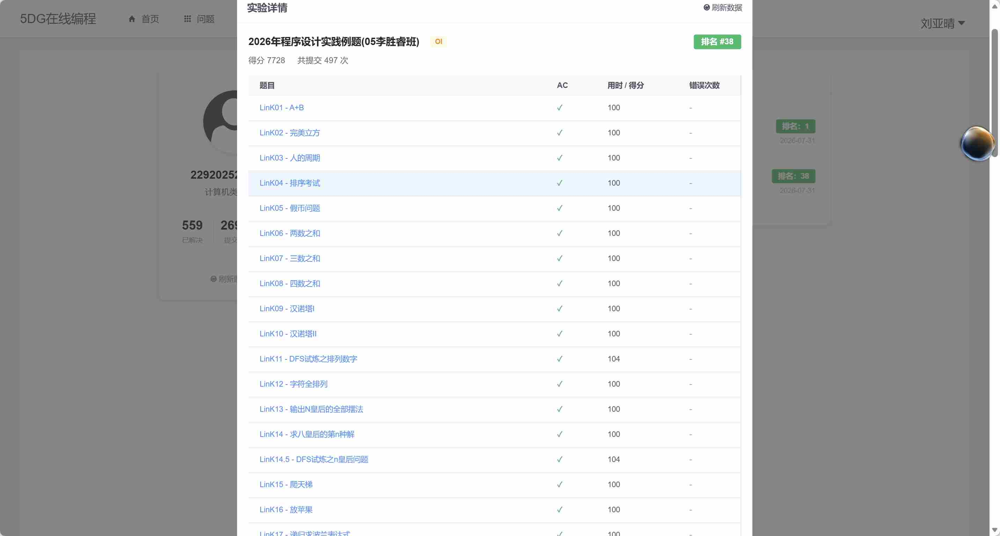
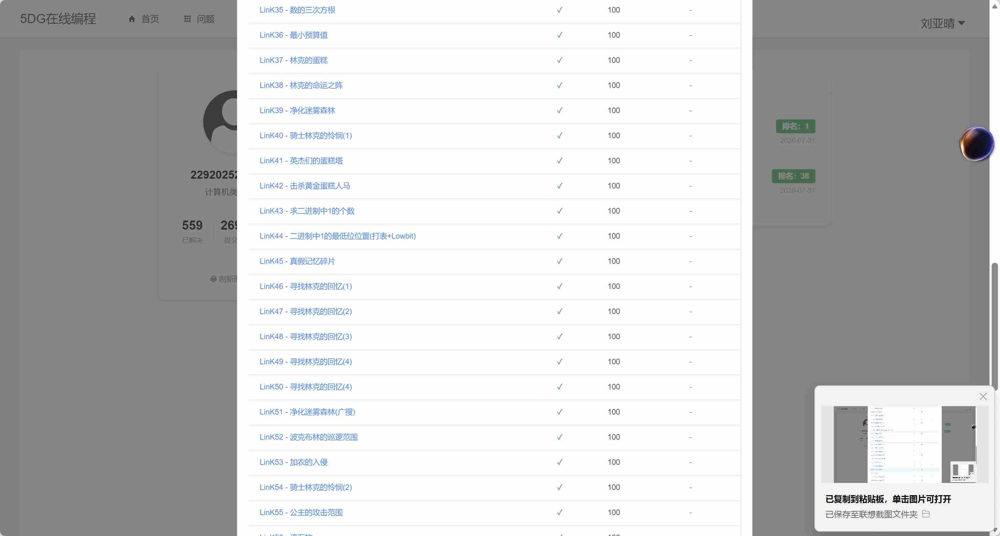
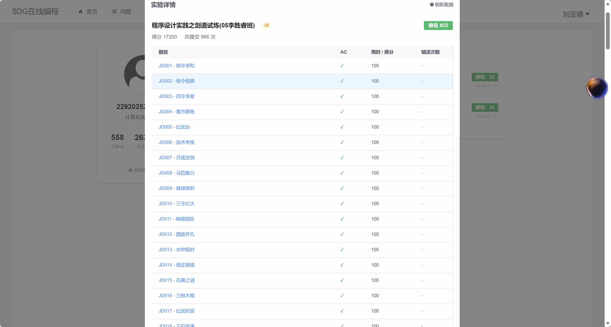
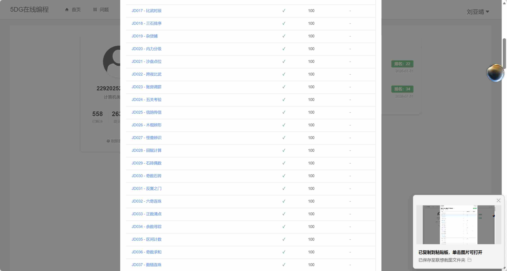
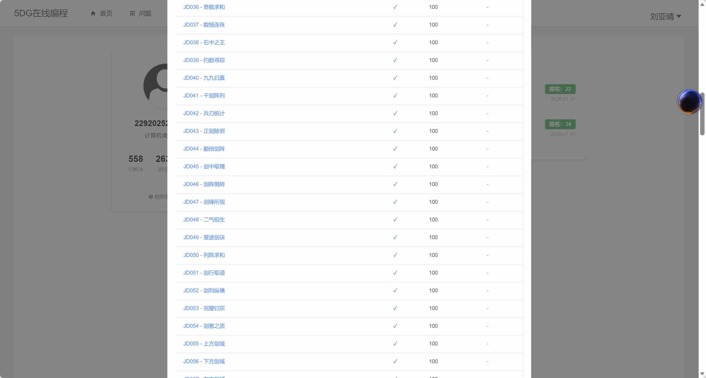
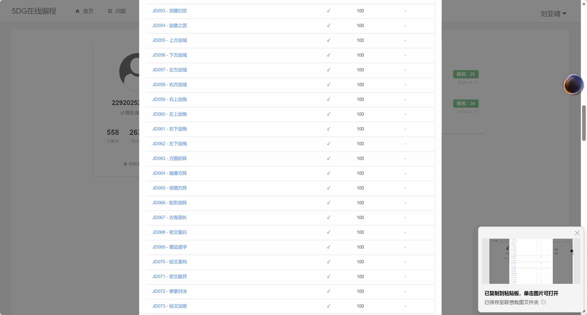
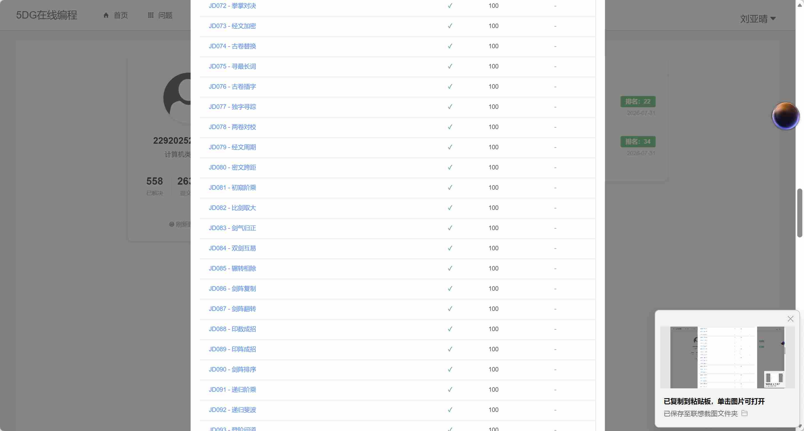
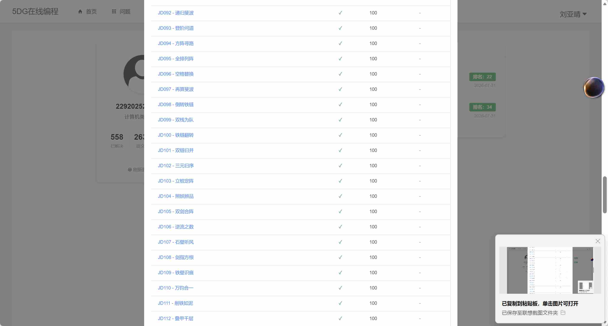
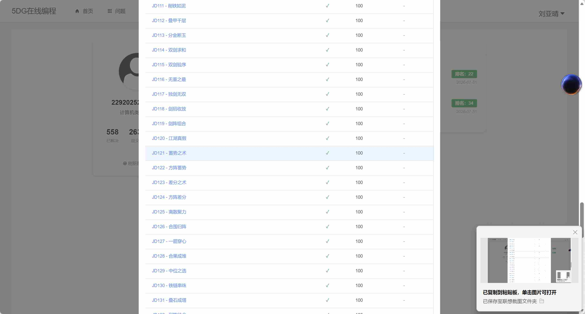
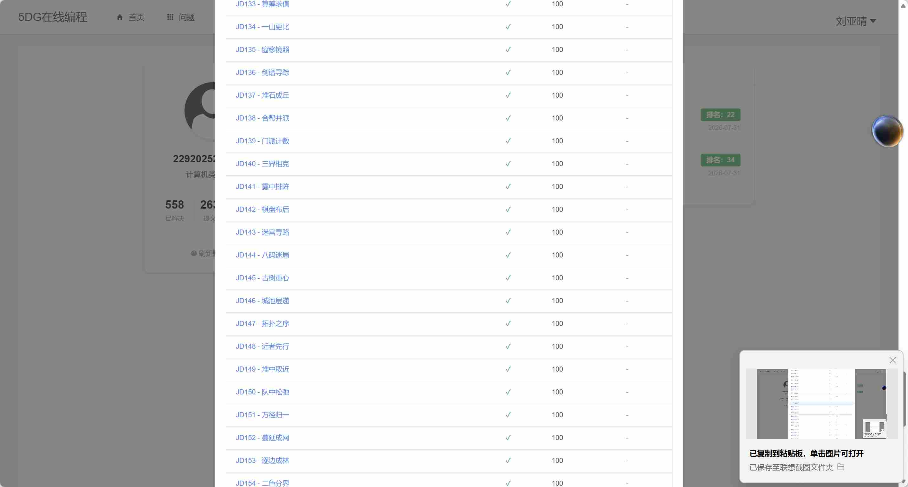

#3 人的周期
一、题目分析
基础规则
人体具有三个生理周期：体力周期23天、情感周期28天、智力周期33天。每个周期中有一天为高峰日。给定三个周期各自在当前年份中第一次出现高峰的天数p、e、i，以及一个基准天数d，求严格大于d的下一次三个高峰同日出现的时间，输出该时间与d的差值。
输入输出要求
每组输入包含四个整数p、e、i、d，以-1 -1 -1 -1结束。每组输出格式为"Case X: the next triple peak occurs in Y days."，其中Y = t - d。
二、核心思路
算法框架：暴力枚举
从d+1开始逐天枚举，找到第一个同时满足三个周期高峰条件的日期t。
关键逻辑
体力高峰：(t - p) % 23 == 0
情感高峰：(t - e) % 28 == 0
智力高峰：(t - i) % 33 == 0
优化方案
取p、e、d三者的最大值作为枚举起点，再+33起步，跳过大段无用日期，减少循环次数。
三、算法步骤
（一）读取与循环控制
① 外层for循环编号m从1开始，持续读取每组数据；
② 读入p、e、i、d四个整数，若p==-1则直接return 0结束程序；
③ 取p、e、d三者的最大值作为枚举起点t，再+33开始遍历。
（二）枚举查找
① 对每个t，依次检查(t-p)%23==0、(t-e)%28==0、(t-i)%33==0；
② 三层if嵌套，全部满足则输出结果，break跳出内层循环处理下一组。
#include <iostream>
using namespace std;
int main()
{
for(int m=1;m>0;m++)
{
int p,i,d,e;
cin>>p>>i>>d>>e;
if(p==-1) return 0;
int t;
// 取三个高峰里最大的值作为初始起点
t=p>i?p:i;
t=t>d?t:d;
for(t=t+33;t>0;t++)
{
if((t-p)%23==0)
{
if((t-i)%28==0)
if((t-d)%33==0)
{
cout<<"Case "<<m<<": the next triple peak occurs in "<<t-e<<" days."<<endl;
break;
}
}
}
}
return 0;
}#4 排序考试
一、题目分析
基础规则
给定T组测试数据，每组先给出整数个数N，再给出N个整数。要求对每组数据升序排序后输出，数字间空格分隔。
输入输出要求
第一行输入T（1≤T≤100），后续每组一行N后跟N个整数。每组输出一行排序后的序列。
二、核心思路
算法框架：直接使用C++标准库排序
使用vector动态数组存储每组数据，调用algorithm头文件中的sort函数进行升序排序。
关键逻辑
vector可根据每组N动态开辟空间；sort默认升序，无需自定义比较函数。
优化方案
使用scanf/printf替代cin/cout，避免大数据量下的IO瓶颈。
三、算法步骤
（一）输入处理
① 读取T，进入while(T--)循环；
② 每组读取N，声明vector<int> arr(N)；
③ 循环读取N个整数存入arr。
（二）排序输出
① 调用sort(arr.begin(), arr.end())升序排序；
② 循环输出，数字间加空格分隔，行末换行。
#include <cstdio>
#include <vector>
#include <algorithm>
using namespace std;
int main() {
int T;
scanf("%d", &T);
while (T--) {
int N;
scanf("%d", &N);
vector<int> arr(N);
for (int i = 0; i < N; i++) {
scanf("%d", &arr[i]); //输入元素
}
sort(arr.begin(), arr.end()); //排序算法 加头文件
for (int i = 0; i < N; i++) {
printf("%d", arr[i]);
if (i < N - 1) printf(" ");
}
printf("\n");
}
return 0;
}#5 假币问题
一、题目分析
基础规则
12枚硬币编号A~L，其中11枚真币、1枚假币，假币不知轻重。给出三次天平称量记录，每次记录包含左边硬币、右边硬币、称量结果（even/up/down）。保证输入数据唯一解，输出假币编号及它是轻（light）还是重（heavy）。
输入输出要求
第一行为测试组数n，后续每组3行称量记录，每行格式：左边字符串 右边字符串 结果字符串。输出格式："X is the counterfeit coin and it is light/heavy."
二、核心思路
算法框架：暴力枚举
依次假设每一枚硬币是假币，分两种假设（偏轻/偏重），用校验函数islight判断该假设是否与三次称量记录全部吻合，唯一通过校验的即为答案。
关键逻辑
称量结果even（平衡）：假币不能出现在左右任一侧；
称量结果up（右边抬高）：若假币偏轻，则假币必须在右侧；
称量结果down（右边下沉）：若假币偏轻，则假币必须在左侧；
若假币偏重，效果等价于交换左右天平后假币偏轻，代码中swap(l, r)实现。
优化方案
12×2=24种假设，每种校验3条记录，计算量极小，无需优化。
三、算法步骤
（一）读取称量数据
① 读取测试组数n；
② 每组读取3行，分别存入lefts[3]、rights[3]、result[3]数组。
（二）枚举假币假设
① 外层循环ch从'A'到'L'，依次假设当前硬币为假币；
② 先调用islight(..., ch, true)假设偏轻，若返回true则输出light并break；
③ 再调用islight(..., ch, false)假设偏重，若返回true则输出heavy并break。
（三）校验函数islight
① 遍历3条称量记录，根据result判断当前假设是否矛盾；
② 若light==false（偏重假设），swap左右天平；
③ 三条记录全部无矛盾则返回true。
【注】若假币偏重，效果等价于交换左右天平后假币偏轻，代码中swap(l, r)实现。
#include <iostream>
#include <string>
#include <algorithm>
using namespace std;
bool islight(string left[3], string right[3], string result[3], char ch, bool light)
{
string c;
c.push_back(ch);//把字符转换成字符串
int i = 0;
for (; i < 3; i++) //检验三条语句是否成立
{
string l = left[i];
string r = right[i];
if (light == false) swap(l, r);
switch (result[i][0])
{
case 'e':
if ( l.find(c)!= string::npos || r.find(c) != string::npos)
return false; break;
case 'u':
if (r.find(c) == string::npos) return false; break;
case 'd':
if(l.find(c) == string::npos) return false; break;
}
}
return true;
}
int main()
{
int n;
cin >> n;
for (int i = 0; i < n; i++)
{
string lefts[3], rights[3], result[3];
for (int j = 0; j < 3; j++)
{
cin >> lefts[j] >> rights[j] >> result[j];
}
for (char ch = 'A'; ch <= 'L'; ch++) //检验每一个硬币是假币
{
if (islight(lefts, rights, result, ch, true))
{
cout << ch << " is the counterfeit coin and it is light."<<endl; //如果是假币就输出并且跳出循环
break;
}
if (islight(lefts, rights, result, ch, false))
{
cout << ch << " is the counterfeit coin and it is heavy."<<endl;
break;
}
}
}
return 0;
}#6 两数之和 双指针
一、题目分析
基础规则
给定升序无重复整数数组和一个目标值target，数组中恰好存在唯一一对数字之和等于target，返回这两个数字的下标（从0开始），保证i<j。
输入输出要求
第一行：target n，第二行：n个升序整数。输出两个下标，空格分隔。
二、核心思路
算法框架：相向双指针
利用数组升序的特性，左指针l从最小值开始，右指针r从最大值开始，相向移动。
关键逻辑
计算sum = a[l] + a[r]；
若sum == target，找到答案，输出l r；
若sum < target，和太小，需要增大→左指针右移l++；
若sum > target，和太大，需要减小→右指针左移r--。
优化方案
双指针O(n)即是最优解，无需排序（数组已升序）。
三、算法步骤
（一）初始化
① 读取target和n，读入数组a；
② 左指针l=0，右指针r=n-1。
（二）双指针查找
① while(l < r)循环，计算sum = a[l] + a[r]；
② 根据sum与target的大小关系移动指针；
③ 找到相等即输出并break。
#include <cstdio>
#include <vector>
using namespace std;
int main()
{
int target, n;
scanf("%d %d", &target, &n);
vector<int> a(n);
for (int i = 0; i < n; ++i)
{
scanf("%d", &a[i]);
}
int l = 0, r = n - 1; //双指针
while (l < r)
{
int sum = a[l] + a[r];
if (sum == target)
{
printf("%d %d\n", l, r);
break;
}
else if (sum < target)
{
l++; //要使sum变大 所以左指针右移
}
else
{
r--; //要使sum变小 所以右指针左移
}
}
return 0;
}#7 三数之和
一、题目分析
基础规则
给定整数数组和目标值target，找出所有满足x+y+z=target且x<y<z的三元组（数字互不重复）。按x升序、x相同按y升序输出。
输入输出要求
第一行：target n，第二行：n个整数。每行输出一个三元组，三个数字空格分隔。
二、核心思路
算法框架：排序 + 外层固定 + 内层双指针
先将数组升序排序，固定第一个数，在右侧区间用相向双指针找另外两个数，将三数之和降维为两数之和。
关键逻辑
排序后天然保证x<y<z；
外层循环i固定第一个数，左指针j=i+1，右指针k=n-1；
计算三数和，若≥target则右指针左移，若==target则记录答案。
优化方案
跳过重复的第一个数（if(i>0 && num[i]==num[i-1]) continue），避免重复三元组。
三、算法步骤
（一）排序与枚举
① sort数组升序；
② 外层i从0到n-1固定第一个数，跳过重复；
③ 内层双指针j=i+1, k=n-1。
（二）双指针收缩
① while(j<k-1 && sum>=target) k--，找到最接近的位置；
② 若sum==target，记录三元组，k--继续搜索；
③ 对结果按自定义comp排序后输出。
#include <iostream>
#include <vector>
#include <algorithm>
using namespace std;
vector<vector<int>> thrsum(vector<int>& num, int target) //找到符合条件的三个数字，返回二维数组
{
sort(num.begin(), num.end());
vector<vector<int>> thr;
int n = num.size();
for (int i = 0; i < n; i++) //固定外层循环i
{
if (i > 0 && num[i] == num[i - 1]) continue;
int k = n - 1;
for (int j = i + 1; j < k; j++) //双指针 j,k
{
while (j < k - 1 && num[i] + num[j] + num[k - 1] >= target) //保证j<k-1 k不越界
k--;
if (num[i] + num[j] + num[k] == target) //如果满足三数之和等于target
{
thr.push_back({ num[i], num[j], num[k] }); //把三个数放入数组容器中
k--;
}
}
}
return thr;
}
bool comp(vector<int>& a, vector<int>& b) {
if (a[0] != b[0])
return a[0] < b[0];
if (a[1] != b[1])
return a[1] < b[1];
return a[2] < b[2];
}
int main()
{
int target, n;
cin >> target >> n;
vector<int> num(n);
for (int i = 0; i < n; i++)
{
cin >> num[i]; //输入数组
}
vector<vector<int>> res;
res = thrsum(num, target);
sort(res.begin(), res.end(), comp);//对找到的数排序保证按顺序输出
for (auto line : res)
{
cout << line[0] << " " << line[1] << " " << line[2] << endl;
}
return 0;
}#8 四数之和
一、题目分析
基础规则
给定整数数组和目标值target，找出所有满足a+b+c+d=target且a<b<c<d的四元组（数字互不重复）。按a升序、a相同按b升序等字典序输出。
输入输出要求
第一行：target n，第二行：n个整数。每行输出一个四元组，四个数字空格分隔。
二、核心思路
算法框架：排序 + 两层固定 + 双指针
延续三数之和思想，用两层循环固定前两个数，第三层+右指针找后两个数，四数之和降维为两数之和。
关键逻辑
o、s两层固定前两个数；
t从s+1开始枚举第三个数，f从n-1向左移动；
while(t<f && sum>=target) f--，找到满足条件的位置；
若四数和==target，记录答案。
优化方案
数组升序排序保证四元组天然递增，最后自定义comp多关键字排序满足输出要求。
三、算法步骤
（一）两重固定
① sort升序；
② 外层o从0到n-1，内层s从o+1到n-1。
（二）双指针查找
① t从s+1，f从n-1，t<f时循环；
② 不断左移f直到四数和≤target；
③ 相等则push_back记录，继续搜索；
④ 最终sort结果后输出。
【注】容器数组传引用（vector<int> & num）的时候可以直接用 num.begin()。若以数组形式传（vector<int> num[]），变量名当作指针num->begin()。
#include <iostream>
#include <vector>
#include <algorithm>
using namespace std;
vector<vector<int>>fournum(int target, vector<int> & num) //传引用
{
sort(num.begin(), num.end());
int o, s, t, f;
vector<vector<int>> res;
for (o = 0; o < num.size(); o++)
{
for (s = o + 1; s < num.size(); s++)
{
for (t = s + 1, f = num.size() - 1; t < f; t++)
{
while ( t < f&&num[o] + num[s] + num[t] + num[f - 1] >= target && t < f) f--;
if (t < f && num[o] + num[s] + num[t] + num[f] == target)
{
res.push_back({ num[o],num[s],num[t],num[f] });
}
}
}
}
return res;
}
bool comp(vector<int>& a, vector<int>& b )
{
if (a[0] != b[0]) return a[0] < b[0];
if (a[1] != b[1]) return a[1] < b[1];
if (a[2] != b[2]) return a[2] < b[2];
return a[3] < b[3];
}
int main()
{
int target, n;
cin >> target >> n;
vector<int> num(n);
for (int i = 0; i < n; i++)
{
cin >> num[i];
}
vector<vector<int>> res;
res = fournum(target, num);
sort(res.begin(), res.end(), comp);
for (auto& v : res)
{
cout << v[0] << " " << v[1] << " " << v[2] << " " << v[3] << endl;
}
return 0;
}#9 汉诺塔1
一、题目分析
基础规则
三根杆子A、B、C，初始A杆有n个圆盘（下大上小）。每次只能移动一个圆盘，大盘不能放小盘上。将所有圆盘从A移到C，输出最少移动步骤，每行格式如"A->C"。
输入输出要求
输入一个整数n，输出每步移动，一行一次。
二、核心思路
算法框架：递归分治
将n个盘子从src移到dest，借助mid：
① 先把n-1个从src移到mid（借助dest）；
② 把最大的第n个从src直接移到dest；
③ 再把n-1个从mid移到dest（借助src）。
关键逻辑
递归终止条件：n==1时，直接输出src->dest。
优化方案
递归天然满足最少步数，无需额外优化。
三、算法步骤
（一）递归函数设计
① 参数：n（盘子数）、src（源杆）、mid（辅助杆）、dest（目标杆）；
② n==1时输出src->dest并return；
③ 否则递归hanoi(n-1, src, dest, mid)，输出src->dest，再递归hanoi(n-1, mid, src, dest)。
（二）主函数
① 读入n，调用hanoi(n, 'A', 'B', 'C')。
#include <iostream>
using namespace std;
// n个盘子，从src借助mid移到dest
void hanoi(int n, char src, char mid, char dest)
{
if (n == 1)
{
cout << src << "->" << dest << endl;
return;
}
// 第一步：n-1个从src移到中间B
hanoi(n - 1, src, dest, mid);
// 第二步：最大盘移到目标C
cout << src << "->" << dest << endl;
// 第三步：n-1个从中间B移到目标C
hanoi(n - 1, mid, src, dest);
}
int main()
{
int n;
cin >> n;
// A源，B辅助，C目标
hanoi(n, 'A', 'B', 'C');
return 0;
}#10 汉诺塔2
一、题目分析
基础规则
汉诺塔问题，三根柱子名称由输入给定。初始n个圆盘在src柱上，目标全部移到dest柱，输出每步移动，格式为"编号:起点->终点"，如"1:A->C"。
输入输出要求
输入n和三个字符（柱名），输出每步移动，编号表示第几个盘子被移动。
二、核心思路
算法框架：递归分治（同汉诺塔1）
核心逻辑一致，区别在于输出格式包含盘子编号，且柱子名称由输入决定。
关键逻辑
n==1时输出"1:src->dest"；
否则递归n-1从src到mid，输出"n:src->dest"，再递归n-1从mid到dest。
优化方案
同汉诺塔1，递归解法即最优。
三、算法步骤
（一）递归函数
① 参数n、src、mid、dest；
② n==1：输出"1:src->dest"，return；
③ n>1：递归n-1(src→mid)，输出当前编号n，递归n-1(mid→dest)。
（二）主函数
① 读入n和三字符a,b,c，调用hanoi(n, a, b, c)。
#include <iostream>
using namespace std;
void hanoi(int n, char src, char mid, char dest)
{
if (n == 1)
{
cout << "1:" << src << "->" << dest << endl;
return;
}
hanoi(n - 1, src, dest, mid);
cout << n << ":" << src << "->" << dest << endl;
hanoi(n - 1, mid, src, dest);
}
int main()
{
int n;
char a, b, c;
cin >> n >> a >> b >> c;
hanoi(n, a, b, c);
return 0;
}#11 DFS试炼之排列数字
一、题目分析
基础规则
给定整数n（1≤n≤8），将1~n的所有整数全排列，按字典序从小到大输出每种排列，数字间空格分隔。
输入输出要求
输入一个整数n，每行输出一种排列方案。
二、核心思路
算法框架：DFS深度优先回溯
使用path数组保存当前排列，vis布尔数组标记数字是否已使用，递归生成全排列。
关键逻辑
从1到n正序遍历数字，优先选小数，生成的排列天然字典序升序；
递归终止条件：path.size()==n时输出当前排列。
优化方案
n≤8无需优化，DFS回溯即最优。
三、算法步骤
（一）DFS递归
① 终止条件：path.size()==n，输出path中所有数字（空格分隔），return；
② 循环i从1到n，若!vis[i]则标记vis[i]=true，path.push_back(i)，递归dfs()；
③ 回溯：path.pop_back()，vis[i]=false。
（二）主函数
① 读入n，初始化vis[8]全false，调用dfs()。
【注】循环枚举：从1到n正序遍历，是字典序的关键，优先选小数，生成的排列天然有序。
#include <iostream>
#include <vector>
using namespace std;
int n;
vector<int> path;
bool vis[8] = {false}; // n<=7，下标1~7标记数字是否使用
// 回溯生成全排列
void dfs()
{
// 选够n个数，输出一组排列
if (path.size() == n)
{
for (int i = 0; i < path.size(); i++)
{
if (i > 0) cout << " ";
cout << path[i];
}
cout << endl;
return;
}
// 从小到大遍历，保证字典序
for (int i = 1; i <= n; i++)
{
if (!vis[i])
{
vis[i] = true;
path.push_back(i);
dfs();
// 回溯
path.pop_back();
vis[i] = false; //撤销标记
}
}
}
int main()
{
cin >> n;
dfs();
return 0;
}#12 字符全排序
一、题目分析
基础规则
给定由不同小写字母组成的字符串，输出其所有全排列，按字典序从小到大输出。
输入输出要求
输入一行字符串，每行输出一种排列。
二、核心思路
算法框架：DFS回溯 + 预排序
先对字符串sort升序排列，保证DFS从小到大遍历时生成的排列天然字典序升序。
关键逻辑
用bool数组标记每个位置字符是否已使用；
path记录当前排列，path.size()==n时输出；
循环i从0到n-1遍历字符，未使用则选中、递归、回溯。
优化方案
sort预处理保证字典序，无需额外排序结果。
三、算法步骤
（一）预处理
① 读入字符串st，计算n=st.size()；
② sort(st.begin(), st.end())升序排序。
（二）DFS递归
① 终止：path.size()==n，输出path；
② 循环i从0到n-1，若!is[i]则标记、push、递归、pop、取消标记。
【注】回溯之前，先把字符从小到大排序，DFS 按下标从小到大遍历，生成的排列自然字典升序。
#include <iostream>
#include <string>
#include <algorithm>
#include<vector>
using namespace std;
string st;
int n;
string path;
bool is[8] = { 0 };
void dfs()
{
if (path.size() == n)
{
for (auto line : path)
{
cout << line;
}
cout << endl;
return;
}
else
{
for (int i = 0; i < n; i++)
{
if (is[i] == false)
{
path.push_back(st[i]);
is[i] = true;
dfs();
path.pop_back();
is[i] =false;
}
}
}
}
int main() {
cin >> st;
n = st.size();
sort(st.begin(), st.end()); // 先排序，保证从最小字典序开始
dfs();
}#13 N皇后
一、题目分析
基础规则
输入正整数N，输出N皇后问题的全部合法摆法。皇后不能同行、同列、同对角线。每行输出一个长度为N的数字串，第i个数字表示第i行皇后所在的列号（列号从1开始）。
输入输出要求
输入一个整数N，每行输出一种摆法（N位数字串）。
二、核心思路
算法框架：DFS逐行回溯
逐行放置皇后（天然保证不同行），每行枚举所有列，检查新位置是否与上方已放置皇后冲突（同列或同对角线），无冲突则放置并递归下一行。
关键逻辑
对于新位置(row, col)，遍历上方已放置皇后(r, res[r])：
列冲突：res[r] == col；
对角线冲突：abs(row - r) == abs(res[r] - col)。
优化方案
列从1到N从小到大枚举，生成的解天然按字典序排列。
三、算法步骤
（一）DFS递归
① 终止条件：row==n，输出res中全部数字；
② 循环c从1到n，检查是否与上方皇后冲突；
③ 无冲突则res.push_back(c)，递归row+1，回溯res.pop_back()。
（二）主函数
① 读入n，调用dfs(0, 空vector)。
#include <iostream>
#include <vector>
#include <cmath>
using namespace std;
int n;
void dfs(int row, vector<int> res) {
if (row == n) {
for (int num : res) cout << num;
cout << endl;
return;
}
for (int c = 1; c <= n; c++) {
bool ok = true;
for (int r = 0; r < row; r++) {
if (res[r] == c || abs(row - r) == abs(res[r] - c)) {
ok = false;
break;
}
}
if (ok) {
res.push_back(c);
dfs(row + 1, res);
res.pop_back();
}
}
}
int main() {
cin >> n;
vector<int> t;
dfs(0, t);
return 0;
}#14 求八皇后的第n种解
一、题目分析
已知八皇后问题共有92组解，每组解对应一个8位数字串。输入n（1≤n≤92），输出第n个八皇后串（按字典序从小到大排列）。
二、核心思路
逐行放置皇后（从第 0 行到第 7 行）
每行尝试 8 个列位置（0~7）
检查当前位置是否与已放置的皇后冲突
如果合法则递归到下一行
到达第 8 行时记录一个完整方案
2. 冲突检测
对于新放置的皇后在第 row 行、第 col 列，需要检查：
列冲突：之前某行 r 的皇后也在第 col 列 → board[r] == col
对角线冲突：之前某行 r 的皇后与当前位置在同一条对角线上 → |board[r] - col| == |r - row|
两个对角线方向（主对角线和副对角线）可以用行差等于列差来统一判断。
3. 字典序保证
回溯时，对于每一行，我们从小到大尝试列号（0→1→2→...→7），这样生成的第一个解就是字典序最小的解，后续生成的解也按字典序递增排列。
#include <iostream>
#include <vector>
#include <cmath>
using namespace std;
vector<vector<int>> ans;
void dfs(int row, vector<int> res)
{
if (row == 8)
{
ans.push_back(res);
return;
}
for (int c = 0; c < 8; c++)
{
bool ok = true;
for (int r = 0; r < row; r++)
{
if (c == res[r] || abs(r - row) == abs(res[r] - c))
{
ok = false;
break;
}
}
if (ok)
{
res.push_back(c);
dfs(row + 1, res);//回溯
res.pop_back();
}
}
return;
}
int main()
{
vector<int> t;
dfs(0, t);
int m;
cin >> m;
for (int i = 0; i < m; i++)
{
int n;
cin >> n;
for (auto line : ans[n-1])
cout << line+1;
cout << endl;
}
return 0;
}#14.5 DFS试炼之n皇后问题
一、题目分析
基础规则
n×n棋盘放置n个皇后，要求任意两个皇后不同行、不同列、不同斜线。输出所有合法摆法，每个方案用n行n列字符画表示（Q表示皇后，.表示空格），方案间用空行分隔。
输入输出要求
输入n（1≤n≤12），输出所有合法棋盘布局，Q和.组成，方案间空行分隔。
二、核心思路
算法框架：DFS逐行回溯
利用皇后不能同行的特性，逐行放置皇后，每行只放一个，只需枚举列位置。用board[row]记录第row行皇后所在列。
关键逻辑
对于新位置(row, col)，检查上方已放置皇后：
列冲突：board[i] == col；
对角线冲突：abs(board[i] - col) == abs(i - row)。
优化方案
列从左到右枚举，搜索出的方案天然升序，符合题目输出顺序。
三、算法步骤
（一）冲突检测函数
① isValid(row, col)：遍历0~row-1行，检查列冲突和对角线冲突。
（二）DFS递归
① 终止：row==n，输出棋盘（Q和.），再输出空行分隔；
② 循环col从0到n-1，调用isValid检查；
③ 合法则board[row]=col，递归row+1。
（三）主函数
① 读入n，board.resize(n)，调用dfs(0)。
【注】对角线冲突判定公式：abs(board[r] - col) == abs(r - row)，统一判断主副对角线。
#include <iostream>
#include <vector>
#include <cstdlib> // for abs
using namespace std;
int n;
vector<int> board; // board[row] = col
bool isValid(int row, int col) {
for (int i = 0; i < row; i++) {
if (board[i] == col || abs(board[i] - col) == abs(i - row))
return false;
}
return true;
}
void dfs(int row) {
if (row == n) {
// 输出棋盘
for (int i = 0; i < n; i++) {
for (int j = 0; j < n; j++) {
cout << (board[i] == j ? 'Q' : '.');
}
cout << endl;
}
cout << endl; // 方案间空行
return;
}
for (int col = 0; col < n; col++) {
if (isValid(row, col)) {
board[row] = col;
dfs(row + 1);
}
}
}
int main() {
cin >> n;
board.resize(n);
dfs(0);
return 0;
}#15 爬天梯
一、题目分析
基础规则
爬楼梯，每步可以跨1级或2级台阶。给定台阶数N，求到达顶端的所有不同走法总数。
输入输出要求
输入一个整数N，输出走法总数。
二、核心思路
算法框架：斐波那契数列递推
设f(n)为爬到第n级的走法数。
递推关系：f(n)=f(n-1)+f(n-2)（最后一步要么跨1级要么跨2级）。
关键逻辑
f(0)=1：0级台阶只有1种走法（不走）；
f(1)=1：1级台阶只有1种走法（跨1级）。
优化方案
使用两个变量滚动递推，空间O(1)，无需数组存储全部结果。
三、算法步骤
（一）初始化
① a=1（f(0)），b=1（f(1)）；
② 若N==0，输出1，return。
（二）递推
① for i从2到N，c=a+b，a=b，b=c；
② 输出b即为f(N)。
【注】爬天梯边界为0，f(0)=1，f(1)=1，注意N=0的特判。
#include <iostream>
using namespace std;
int main() {
int N;
cin >> N;
// f(0) = 1, f(1) = 1
long long a = 1, b = 1; // a = f(0), b = f(1)
if (N == 0) {
cout << 1 << endl;
return 0;
}
for (int i = 2; i <= N; i++) {
long long c = a + b;
a = b;
b = c;
}
cout << b << endl;
return 0;
}#16 放苹果
一、题目分析
基础规则
M个相同苹果放入N个相同盘子，允许空盘，求不同放法总数。盘子相同、苹果相同，只关心各盘子苹果数量分布，顺序无关。
输入输出要求
第一行t为测试组数，后续每行M N，输出每组放法数。
二、核心思路
算法框架：整数划分递归
设dfs(m, n)表示m个苹果放n个盘子的放法数。
关键逻辑
n==0：只有m==0时有1种放法（什么也不放），否则0种；
m==0：所有盘子空，1种放法；
n>m：盘子比苹果多，多余盘子无影响，等价于dfs(m, m)；
m≥n：分为有空盘（dfs(m, n-1)）和无空盘（dfs(m-n, n)）两类，之和为总放法。
优化方案
递归即最优，无需额外优化。
三、算法步骤
（一）递归函数dfs(m, n)
① n==0：return m==0?1:0；
② m==0：return 1；
③ n>m：return dfs(m, m)；
④ 否则return dfs(m, n-1) + dfs(m-n, n)。
（二）主函数
① 读入t，循环读入M、N，输出dfs(M, N)。
【注】m=0,n=0 零的拆分；m=1,n=0 ,return 0;
#include <iostream>
using namespace std;
int dfs(int m, int n)
{
// 没有盘子
if (n == 0)
{
return m == 0 ? 1 : 0;
}
// 没有苹果，全部空盘
if (m == 0)
{
return 1;
}
// 盘子比苹果多，多余盘子忽略
if (n > m)
{
return dfs(m, m);
}
// 有空盘的情况 + 每个盘子至少1个苹果
return dfs(m, n - 1) + dfs(m - n, n);
}
int main()
{
int t;
cin >> t;
while (t--)
{
int M, N;
cin >> M >> N;
cout << dfs(M, N) << endl;
}
return 0;
}#17 递归求波兰表达式
一、题目分析
基础规则
波兰表达式（前缀表达式）将运算符写在操作数前，如"* + 2 3 4"等价于(2+3)*4。给定由+、-、*、/和浮点数组成的波兰表达式，元素间空格分隔，求其值。
输入输出要求
输入一行波兰表达式字符串，输出计算结果（保留6位小数）。
二、核心思路
算法框架：递归解析
前缀表达式天然适合递归求值：遇到运算符则递归计算左右两个子表达式，遇到数字则直接返回。
关键逻辑
从左到右扫描token数组，用pos记录当前处理位置；
若当前token是数字，直接返回atof值；
若当前token是运算符，递归计算左操作数和右操作数，根据运算符执行对应运算。
优化方案
使用stringstream分词，vector存储tokens，pos指针推进。
三、算法步骤
（一）分词
① getline读取整行，stringstream分词存入vector<string> tokens。
（二）递归求值函数stt
① 取出当前token m = tokens[pos++]；
② 若m不是运算符，直接返回atof(m)；
③ 否则递归计算left和right，根据m执行+、-、*、/运算并返回。
（三）主函数
① 分词后调用stt，printf("%.6f")输出。
【注】atof 不支持直接接收 std::string，只能接收 char*，必须用 c_str() 转换。
#include <iostream>
#include <string>
#include <sstream>
#include <cstdio>
#include <cstdlib>
#include <vector>
using namespace std;
double stt(vector<string>& st, int& pos)
{
string m = st[pos++];
if (m != "+" && m != "-" && m != "*" && m != "/")
{
return atof(m.c_str());//C 标准库函数 atof 不支持直接接收 std::string，只能接收 char*，必须做转换
}
else
{
double left = stt(st, pos);
double right = stt(st, pos);
if (m == "+") return left + right;
if (m == "-") return left - right;
if (m == "*") return left * right;
else return left / right;
}
}
int main()
{
string sm;
getline(cin, sm);
stringstream ss(sm);
vector <string> tokens;
string current;
int pos = 0;
while (ss >> current)
{
tokens.push_back(current);
}
printf("%.6f",stt(tokens, pos));
return 0;
}#18 2的幂次方表示
一、题目分析
基础规则
任意正整数可以用2的幂次方表示。约定a^b表示为a(b)，2^1直接用2表示，2^0用2(0)表示。如137=2(7)+2(3)+2(0)，其中7=2(2)+2+2(0)，3=2+2(0)。给定n≤20000，输出其按约定的表示形式。
输入输出要求
输入一个整数n，输出符合约定的表示字符串。
二、核心思路
算法框架：递归分解
将n表示为二进制展开的2的幂次和，对每个指数≥2的项递归展开。
关键逻辑
从高位到低位遍历二进制位（i从15到0）；
若第i位为1，根据i的值决定输出格式：
i==0：输出"2(0)"；
i==1：输出"2"；
i≥2：输出"2(" + solve(i) + ")"；
各项之间用"+"连接。
优化方案
预处理所有≤20000的数的表示并缓存，但n≤20000递归本身已足够快。
三、算法步骤
（一）递归函数solve(n)
① 特殊情况：n==0返回"0"，n==1返回"2(0)"，n==2返回"2"；
② 从i=15到0遍历二进制位，找到为1的位调用solve(i)递归；
③ 用"+"连接各项。
（二）主函数
① 读入n，输出solve(n)。
#include <iostream>
#include <string>
using namespace std;
string solve(int n) {
// 特殊情况
if (n == 0) return "0";
if (n == 1) return "2(0)";
if (n == 2) return "2";
string result = "";
bool first = true;
// 从高位到低位遍历二进制位
for (int i = 15; i >= 0; i--) {
if ((n >> i) & 1) { // 第 i 位是 1
if (!first) {
result += "+"; // 不是第一项，加 '+'
}
first = false;
// 根据指数 i 的值决定输出格式
if (i == 0) {
result += "2(0)";
} else if (i == 1) {
result += "2";
} else {
result += "2(" + solve(i) + ")";
}
}
}
return result;
}
int main() {
int n;
cin >> n;
cout << solve(n) << endl;
return 0;
}#19 递归实现指数型枚举
一、题目分析
基础规则
从1~n这n个整数中随机选取任意多个（包括空集），输出所有可能的选择方案，每种方案一行，数字升序排列，空格分隔。
输入输出要求
输入一个整数n，按字典序从小到大输出所有子集。
二、核心思路
算法框架：DFS递归枚举子集
按顺序选取数字，只往后选不回头，天然保证升序，自动生成全部不重复子集。
关键逻辑
当前递归进入时，先输出当前path（即当前子集）；
然后从start到n枚举下一个可选数字，选中后递归i+1，回溯撤销。
优化方案
每个节点都输出（包括空集），无需特殊终止条件，递归自然覆盖所有子集。
三、算法步骤
（一）DFS递归
① 先输出当前path中所有数字（空格分隔，换行）；
② for i从start到n，push_back(i)，递归dfs(i+1)，pop_back()回溯。
（二）主函数
① 读入n，调用dfs(1, 空vector)。
【注】vector<int>& s：保存当前递归路径里选中的数字（当前子集），引用传递节省拷贝开销。
#include <iostream>
#include <vector>
using namespace std;
void dfs(int n, int start, vector<int>& s)
{
for (auto line : s)
{
cout << line<<" ";
}
cout << endl;
for (int i = start; i <= n; i++)
{
s.push_back(i);
dfs(n, i + 1, s);
s.pop_back();
}
return;
}
int main()
{
int n;
cin >> n;
vector<int> s;
dfs(n, 1, s);
return 0;
}#20 递归实现组合型枚举
一、题目分析
基础规则
从1~n中选出恰好m个整数，输出所有组合方案。同一行数字升序排列，所有方案按字典序从小到大输出。
输入输出要求
输入n和m（0≤m≤n，n>0），每行输出一种组合，数字空格分隔。
二、核心思路
算法框架：DFS回溯 + 剪枝
组合不考虑顺序且无重复，规定后选数字必须大于前一个，用start参数保证递增。
关键逻辑
path.size()==m时输出当前方案；
从start到n枚举下一个数字，选中后递归i+1；
回溯pop_back()撤销。
优化方案：剪枝
剩余可选数字不足以凑齐还需要选的数量时直接返回：if(n - start + 1 < rest) return。
三、算法步骤
（一）DFS递归
① 终止：path.size()==m，输出path，return；
② 剪枝：剩余数字不够，直接return；
③ 循环i从start到n，push_back(i)，递归dfs(i+1)，pop_back()回溯。
（二）主函数
① 读入n、m，调用dfs(1)。
【注】剪枝优化：剩余可选数字不够时直接返回，if(n - start + 1 < rest) return，大幅减少递归分支。
#include <iostream>
#include <vector>
using namespace std;
int n, m;
vector<int> path;
// start：下一个能选的数字最小值
void dfs(int start)
{
// 选满m个，输出方案
if (path.size() == m)
{
for (int i = 0; i < path.size(); i++)
{
if (i) cout << " ";
cout << path[i];
}
cout <<" "<<endl;
return;
}
// 剪枝：剩下数字不够凑齐需要的数量，直接返回
int rest = m - path.size();
// 从start到n一共有 n - start + 1 个数
if (n - start + 1 < rest)
return;
// 从小到大枚举可选数字，天然字典序
for (int i = start; i <= n; i++)
{
path.push_back(i);
dfs(i + 1); // 下一轮只能选比i大的数，杜绝重复组合
path.pop_back(); // 回溯撤销选择
}
}
int main()
{
cin >> n >> m;
dfs(1);
return 0;
}#21 递归实现排列型枚举
一、题目分析
基础规则
将1~n这n个整数全排列，按字典序从小到大输出所有排列。每行一组排列，数字空格分隔。
输入输出要求
输入n（1≤n≤9），每行输出一种排列，数字空格分隔。
二、核心思路
算法框架：DFS回溯全排列
排列允许数字顺序不同，每个数字只能使用一次。用path保存当前排列，vis布尔数组标记数字是否已使用。
关键逻辑
path.size()==n时输出完整排列；
循环i从1到n，未使用则选中、递归、回溯；
从1到n正序遍历，天然保证字典序升序。
优化方案
n≤9时DFS回溯即最优，无需额外优化。
三、算法步骤
（一）DFS递归
① 终止：path.size()==n，输出path（空格分隔），return；
② 循环i从1到n，若!vis[i]则标记、push、递归、pop、取消标记。
（二）主函数
① 读入n，初始化vis[10]全false，调用dfs()。
#include <iostream>
#include <vector>
using namespace std;
int n;
vector<int> path;
bool vis[10] = { false }; // n最大为9，下标1~9对应数字
void dfs()
{
// 已经凑齐n个数，输出排列
if (path.size() == n)
{
// 先输出第一个数，后续数字前面加空格，杜绝行尾空格
cout << path[0];
for (int i = 1; i < n; i++)
{
cout << " " << path[i];
}
cout << " "<<endl;
return;
}
// 从小到大遍历，保证字典序输出
for (int i = 1; i <= n; i++)
{
if (!vis[i])
{
vis[i] = true;
path.push_back(i);
dfs();
// 回溯恢复状态
path.pop_back();
vis[i] = false;
}
}
}
int main()
{
cin >> n;
dfs();
return 0;
}#22 算术表达式
一、题目分析
基础规则
表达式由1~9单个数字、+、*构成，共N个数字，长度2N-1。运算规则：先乘法后加法。结果对MOD=10^9+7取模。
输入输出要求
第一行输入N，第二行输入表达式字符串。输出计算结果对10^9+7取模。
二、核心思路
算法框架：线性扫描分段
将表达式按+号拆成若干乘积段，段内全部是乘法，段间累加。
关键逻辑
遍历字符串，遇到数字累积到当前乘积mul中（mul = mul * num % MOD）；
遇到+号，将当前乘积加到总和ans，重置mul=1；
遍历结束后，补加最后一段乘积。
优化方案
一次遍历O(n)，无需栈/递归，避免大数据量超时。
三、算法步骤
（一）初始化
① ans=0，mul=1；
② 读入N和字符串s。
（二）遍历计算
① 遍历s中每个字符c；
② 若c是数字，mul = mul * (c-'0') % MOD；
③ 若c是'+'，ans = (ans + mul) % MOD，mul = 1；
④ 遍历结束，ans = (ans + mul) % MOD，输出ans。
【注】先乘法后加法：按+号分段，段内累乘，段间累加，最后补加末段结果。
#include <iostream>
#include <string>
using namespace std;
typedef long long ll;
const int MOD = 1000000007;
int main()
{
ios::sync_with_stdio(false);
cin.tie(nullptr); // 加速输入，应对2e5长度字符串
int n;
string s;
cin >> n >> s;
ll ans = 0;
ll mul = 1;
for (char c : s)
{
if (c >= '1' && c <= '9')
{
int num = c - '0'; // 字符转整型数字
mul = mul * num % MOD;
}
else if (c == '+') // 遇到加号，代表当前乘法段结束
{
ans = (ans + mul) % MOD;
mul = 1;
}
// 遇到*无需任何操作，直接继续循环，连续乘自动累积在mul里
}
// 加上最后一段乘积
ans = (ans + mul) % MOD;
cout << ans << endl;
return 0;
}#24 二进制密码锁
一、题目分析
基础规则
n个按钮（n<30），状态为0/1。按下第i个按钮会翻转i-1、i、i+1三个位置的状态（边界只翻转存在的相邻按钮）。给定初始串和目标串，求最少按压次数，无解输出"impossible"。
输入输出要求
输入两行字符串（初始串和目标串），输出最少按压次数或"impossible"。
二、核心思路
算法框架：枚举首按钮 + 贪心推导
第一个按钮按或不按决定了整个操作序列。枚举首按钮两种状态后，从左到右依次确定每个按钮是否需要按：若当前位置i-1的状态与目标不一致，则必须按第i个按钮。
关键逻辑
翻转函数flip(pos)：翻转pos-1、pos、pos+1三个位置（边界自动过滤）；
从左到右遍历：若cur[i-1]!=target[i-1]，则按第i个按钮；
最后检查末位是否匹配，匹配则记录操作次数。
优化方案
两种枚举取最小，都无效则输出"impossible"。
三、算法步骤
（一）翻转函数
① flip(string &s, int pos)：翻转pos-1、pos、pos+1（边界判断）。
（二）求解函数solve
① 参数firstPress决定首按钮是否按；
② 按firstPress决定后，从左到右遍历，若前一位不匹配则按当前按钮；
③ 末位匹配返回cnt，否则返回INF。
（三）主函数
① 读入s和t，计算ans1=solve(s,t,false)，ans2=solve(s,t,true)；
② 取min，若为INF输出"impossible"，否则输出res。
【注】第一个按钮按或不按决定了整个操作序列，枚举首按钮两种状态后，从左到右依次确定每个按钮。
#include <iostream>
#include <string>
#include <algorithm>
using namespace std;
const int INF = 0x3f3f3f3f;
int n;
// 翻转pos位置及其相邻
void flip(string &s, int pos)
{
if (pos - 1 >= 0) s[pos - 1] = (s[pos - 1] == '0' ? '1' : '0');
s[pos] = (s[pos] == '0' ? '1' : '0');
if (pos + 1 < n) s[pos + 1] = (s[pos + 1] == '0' ? '1' : '0');
}
// 枚举首按钮是否按压，返回最小步数，无解返回INF
int solve(string start, string target, bool firstPress)
{
string cur = start;
int cnt = 0;
if (firstPress)
{
flip(cur, 0);
cnt++;
}
// 从第1位到末尾
for (int i = 1; i < n; i++)
{
// 前一位不匹配，必须按当前i
if (cur[i - 1] != target[i - 1])
{
flip(cur, i);
cnt++;
}
}
// 最后一位必须相等
if (cur.back() == target.back())
return cnt;
else
return INF;
}
int main()
{
string s, t;
cin >> s >> t;
n = s.size();
// 两种情况：第一个按钮不按 / 按
int ans1 = solve(s, t, false);
int ans2 = solve(s, t, true);
int res = min(ans1, ans2);
if (res == INF)
cout << "impossible" << endl;
else
cout << res << endl;
return 0;
}#26 熄灯问题
一、题目分析
基础规则
5行6列灯矩阵，按下(i,j)会翻转自身及上下左右相邻灯。每个按钮最多按一次（按两次抵消）。给定初始灯状态，求使所有灯熄灭的按压方案。
输入输出要求
多组测试，每组5行每行6个0/1（1表示灯亮）。输出"PUZZLE #编号"后跟5行按压方案（1表示按，0表示不按）。
二、核心思路
算法框架：枚举第一行 + 逐行推导
第一行的按压方案一旦确定，下面2~5行的操作完全唯一确定：对于第i行某列灯，若它亮着，只能通过按下第i+1行同列按钮熄灭它。
关键逻辑
枚举第一行64种按压掩码（0~63）；
模拟第一行按压效果；
逐行推导2~5行：若当前灯亮，下一行同列必须按；
最后校验第5行是否全灭。
优化方案
第一行仅6列，64种枚举极少，暴力枚举即可。
三、算法步骤
（一）读取与枚举
① 读入5×6初始矩阵，用bitset<6>存储；
② 枚举第一行按压方案line从0到63。
（二）模拟与推导
① 复制原始灯状态到remember；
② 根据第一行line模拟按压，翻转受影响灯；
③ 逐行推导：当前行灯亮→下一行同列按，更新灯状态；
④ 检查第5行是否全灭，是则输出方案并break。
【注】第一行的按压方案一旦确定，下面2~5行的按压操作完全唯一确定，只需枚举第一行64种方案。
#include<iostream>
#include <bitset>
using namespace std;
int main()
{
int T;
cin >> T;
for (int t = 0; t < T; t++)
{
bitset<6> source[5];
for (int j = 0; j < 5; j++)
{
for (int k = 0; k < 6; k++)
{
int m;
cin >> m;
source[j].set(k, m);
}
}
bitset<6> res[5];
bitset<6> line;
bitset<6> remember[5];
for (int i = 0; i < 64; i++) //自动对应二进制
{
line = i;
for (int k = 0; k < 5; k++)
remember[k] = source[k];
for (int m = 0; m < 5; m++)
{
res[m] = line;
for (int n = 0; n < 6; n++)
{
if (line.test(n))
{
if (n < 5) remember[m].flip(n + 1); //按键取反自己与上下左右
remember[m].flip(n);
if(m<4) remember[m + 1].flip(n);
if (n > 0) remember[m].flip(n - 1);
if (m > 0) remember[m - 1].flip(n);
}
}
line = remember[m];//下一行的按键方式与这一行状态相同，亮就按，熄灭就不俺
}
if (remember[4].none())
{
cout << "PUZZLE #" << t+1<< endl;
for (int j = 0; j < 5; j++)
{
for (int k = 0; k <= 5; k++)
{
cout << res[j].test(k) << ' ';
}
cout << endl;
}
break;
}
}
}
return 0;
}#27 拨钟问题
一、题目分析
基础规则
9个时钟排成3×3矩阵，指针初始指向0(12点)/1(3点)/2(6点)/3(9点)。有9种操作，每种操作将特定时钟顺时针拨90度。求使所有时钟指向12点的最短操作序列（按操作序号从小到大输出）。
输入输出要求
输入9个整数（0~3），输出最短操作序列（操作编号空格分隔）。
二、核心思路
算法框架：模4方程组 + 枚举降维
将问题转化为模4线性方程组，每个时钟需被拨动的总次数满足模4为0。固定前3个操作x1~x3（仅4^3=64种），通过方程组推导剩余6个操作。
关键逻辑
由前6个方程唯一确定x4~x9：
x4=(-a-x1-x2) mod 4
x6=(-c-x2-x3) mod 4
x5=(-b-x1-x2-x3) mod 4
x7=(-d-x1-x4-x5) mod 4
x9=(-f-x3-x5-x6) mod 4
x8=(-g-x4-x7) mod 4
推导完成后校验E、H、I等式，全部成立则为合法方案。
优化方案
枚举从9维降到3维，4^9→4^3=64，大幅提速。
三、算法步骤
（一）枚举x1~x3
① 三重循环x1,x2,x3从0到3；
② 按公式依次推导x4~x8；
③ 校验h、i、e等式，不满足则continue。
（二）最优解筛选
① 统计总步数sum，若≥minStep则跳过；
② 更新minStep，生成操作序列（按编号1~9展开）；
③ 输出最优序列。
【注】固定前3个操作枚举，通过方程组推导剩余6个操作，将 4^9=262144 降为 4^3=64，大幅减少枚举量。
#include <iostream>
#include <vector>
#include <climits>
using namespace std;
int mod4(int x)
{
x %= 4;
if (x < 0) x += 4;
return x;
}
int main()
{
int clk[9];
// 输入A B C D E F G H I
for (int i = 0; i < 9; i++)
cin >> clk[i];
int a = clk[0], b = clk[1], c = clk[2];
int d = clk[3], e = clk[4], f = clk[5];
int g = clk[6], h = clk[7], i = clk[8];
int minStep = INT_MAX;
vector<int> ans;
// 枚举x1 x2 x3 0~3
for (int x1 = 0; x1 < 4; x1++)
{
for (int x2 = 0; x2 < 4; x2++)
{
for (int x3 = 0; x3 < 4; x3++)
{
int x4 = mod4(-a - x1 - x2);
int x6 = mod4(-c - x2 - x3);
int x5 = mod4(-b - x1 - x2 - x3);
int x7 = mod4(-d - x1 - x4 - x5);
int x9 = mod4(-f - x3 - x5 - x6);
int x8 = mod4(-g - x4 - x7);
// 校验h、i等式
int eqH = mod4(x5 + x7 + x8 + x9);
int eqI = mod4(x6 + x8 + x9);
if (eqH != mod4(-h) || eqI != mod4(-i))
continue;
// 校验e等式（可选，双重验证）
int eqE = mod4(x1 + x3 + x5 + x7 + x9);
if (eqE != mod4(-e))
continue;
// 统计总步数
int total = x1 + x2 + x3 + x4 + x5 + x6 + x7 + x8 + x9;
if (total >= minStep)
continue;
minStep = total;
// 生成操作序列
vector<int> res;
int cnt[10] = { 0, x1, x2, x3, x4, x5, x6, x7, x8, x9 };
for (int op = 1; op <= 9; op++)
{
for (int t = 0; t < cnt[op]; t++)
res.push_back(op);
}
ans = res;
}
}
}
// 输出结果，空格分隔
for (int i = 0; i < ans.size(); i++)
{
if (i > 0) cout << " ";
cout << ans[i];
}
cout << endl;
return 0;
}#26 算24
一、题目分析
基础规则
给出4个小于10的非负整数，可使用+、-、*、/和括号任意组合，判断能否算出24。除法为实数除法，数字顺序可任意调换。
输入输出要求
多组输入，每组4个整数，全0结束。每组输出"YES"或"NO"。
二、核心思路
算法框架：递归合并
任意两个数先运算，4个数逐步合并为1个数。递归函数接收当前剩余数字列表，只剩1个数字时判断是否≈24。
关键逻辑
枚举任意两个不同下标i、j，取出a=num[i]、b=num[j]；
生成6种运算结果：a+b、a-b、b-a、a*b、a/b（b≠0）、b/a（a≠0）；
构造新数组（删除i、j，加入运算结果），递归；
浮点误差：abs(x-24)<1e-6判定相等。
优化方案
4个数运算组合有限，递归枚举全部可过。
三、算法步骤
（一）递归函数count
① 终止：n==1，判断abs(a[0]-24)≤1e-7；
② 双重循环枚举i、j，6种运算；
③ 构造新数组change，递归count(change, n-1)；
④ 任一分支true则返回true。
（二）主函数
① 循环读入4个数，全0则break；
② 调用count，输出YES/NO。
【注】Vector 只能由 push_back() 加入新元素，不能直接用下标赋值，否则会越界。
【注】浮点误差判断：abs(x - 24) < 1e-6，不可直接判等，浮点数运算存在精度损失。
#include <iostream>
#include <vector>
#include <cmath>
using namespace std;
bool count(vector<double>& a, int n)
{
if (n == 1)
{
if (fabs(a[0] - 24) <= 1e-7)
return true;
else return false;
}
double nc;
//枚举任意两个数
for (int i = 0; i < a.size()-1; i++)
{
for (int j = i + 1; j < a.size(); j++)
{
for (int k = 1; k <= 6; k++)
{
switch (k) // 循环六种运算可能
{
case 1: nc = a[i] + a[j]; break;
case 2: nc= a[i] - a[j]; break;
case 3: nc = a[j] - a[i]; break;
case 4:nc = a[i] * a[j]; break;
case 5:if (a[i]!=0) nc = a[j] / a[i]; break;
case 6:if (a[j]!=0) nc = a[i] / a[j]; break;
}
vector<double> change;
for (int t=0; t < a.size(); t++)
{
if (t!=i && t!=j) //是下标不同而不是值不同，因为会有重复值
change.push_back(a[t]);
}
change.push_back(nc);
if(count(change, n - 1)) return true;
}
}
}
return false;
}
int main()
{
for (int t = 0; t < 1000; t++)
{
vector<double >in(4);
for (int i = 0; i < 4; i++)
cin >> in[i];
if (!in[0] && !in[1] && !in[2] && !in[3]) break;
if (count(in, 4)) cout << "YES"<<endl;
else cout << "NO"<<endl;
}
return 0;
}#27 大数排序
一、题目分析
基础规则
给定长度为n的整数数列，升序排序后输出。数据范围：1≤n≤100000，整数范围1~10^9。
输入输出要求
第一行输入n，第二行输入n个整数。输出一行排序后的序列，空格分隔。
二、核心思路
算法框架：快速排序
使用双指针快速排序，选取基准值mid，左指针找大于基准值的元素，右指针找小于基准值的元素，交换后递归分治。
关键逻辑
mid = a[(l+r)/2]；
while(l<=r)：左指针找≥mid，右指针找≤mid，交换；
递归左段quick(l, r)，递归右段quick(l, right)。
优化方案
使用ios::sync_with_stdio(false)和cin.tie(nullptr)加速IO，换行用'\n'而非endl。
三、算法步骤
（一）快速排序函数quick
① 递归出口：l>=r时return；
② 取mid=a[(l+r)/2]，双指针l=left, r=right；
③ while(l<=r)：内层while找逆序对，交换，l++、r--；
④ 递归quick(left, r)和quick(l, right)。
（二）主函数
① 加速IO，读入n和数组；
② 调用quick(0, n-1)，输出排序后数组。
【注】ios::sync_with_stdio(false); cin.tie(nullptr); 加快输入输出，也可以用printf scanf，大数据换行用'\n'。
【注】快速排序中 while 条件不能加等号（a[l] < mid 而非 a[l] <= mid），否则遇到相等值可能死循环。
#include <iostream>
#include <vector>
#include <algorithm>
using namespace std;
void quick(vector<int>& a, int left, int right)
{
int l = left, r = right;
if (l>= r) return;
int mid = a [(l + r) / 2];
while (l <= r)
{
while (a [l] <mid) l++; // 没有等号 不然遇到相等的可能死循环
while (a [r] > mid) r--;
if (l <= r)
{
int t;
t = a [l];
a [l] = a [r];
a [r] = t;
l++;
r--;
}
}
quick (a, left, r);// 先排左段
quick (a, l, right);
return;
}
int main()
{
ios::sync_with_stdio(false);
cin.tie(nullptr);
int n;
cin>>n;
vector<int> temp;
for (int i = 0; i < n; i++)
{
int t;
cin >> t;
temp.push_back(t);
}
quick(temp, 0, n - 1);
for (auto line : temp)
cout << line << " ";
cout << ‘\n’;
return 0;
}#28 快速选择第k个数
一、题目分析
基础规则
给定长度为n的整数数组和整数k，找出第k小的数（从小到大排名第k，即排序后下标k-1位置）。
输入输出要求
第一行输入n和k，第二行输入n个整数。输出第k小的数。
二、核心思路
算法框架：快速排序后取第k-1个元素
对数组进行快速排序，升序排列后直接输出a[k-1]。
关键逻辑
同大数排序的快速排序实现，利用双指针分区递归。
优化方案
可使用快速选择算法QuickSelect（期望O(n)），但完整排序O(nlogn)对本数据量也已足够。
三、算法步骤
（一）快速排序
① 同大数排序的quick函数。
（二）主函数
① 读入n、k和数组；
② 调用quick(0, n-1)；
③ 输出temp[k-1]。
【注】快速排序中 while 条件不能加等号（a[l] < mid 而非 a[l] <= mid），否则遇到相等值可能死循环。
#include <iostream>
#include <vector>
#include <algorithm>
using namespace std;
void quick(vector<int>& a, int left, int right)
{
int l = left, r = right;
if (l >= r) return;
int mid = a[(l + r) / 2];
while (l <= r)
{
while (a[l] < mid) l++; //没有等号 不然遇到相等的可能死循环
while (a[r] > mid)r--;
if (l <= r)
{
int t;
t = a[l];
a[l] = a[r];
a[r] = t;
l++;
r--;
}
}
quick(a, left, r);//先排左段
quick(a, l, right);
return;
}
int main()
{
ios::sync_with_stdio(false);
cin.tie(nullptr);
int n,k;
cin >> n>>k;
vector<int> temp;
for (int i = 0; i < n; i++)
{
int t;
cin >> t;
temp.push_back(t);
}
quick(temp, 0, n - 1);
cout << temp[k - 1]<< '\n';
return 0;
}#29 输出前k大的数
一、题目分析
基础规则
给定长度为n的整数数组和整数k（k<n），找出前k大的数，从大到小输出，每个数单独一行。
输入输出要求
第一行输入n，第二行n个整数，第三行k。输出k行，每行一个数，从大到小排列。
二、核心思路
算法框架：快速排序后逆序输出
对数组升序排序后，从n-1位置向前输出k个元素，即为前k大的数。
关键逻辑
同大数排序的快速排序实现；
输出时从j=n-1到j=n-k逆序输出。
优化方案
使用IO加速防止超时，换行用'\n'。
三、算法步骤
（一）快速排序
① 同大数排序的quick函数。
（二）主函数
① 读入n和数组，再读入k；
② 调用quick(0, n-1)；
③ 从n-1到n-k逆序输出，每行一个数。
#include <iostream>
#include <vector>
#include <algorithm>
using namespace std;
void quick(vector<int>& a, int left, int right)
{
int l = left, r = right;
if (l >= r) return;
int mid = a[(l + r) / 2];
while (l <= r)
{
while (a[l] < mid) l++; //没有等号 不然遇到相等的可能死循环
while (a[r] > mid)r--;
if (l <= r)
{
int t;
t = a[l];
a[l] = a[r];
a[r] = t;
l++;
r--;
}
}
quick(a, left, r);//先排左段
quick(a, l, right);
return;
}
int main()
{
ios::sync_with_stdio(false);
cin.tie(nullptr);
int n,m;
cin >> n;
vector<int> temp;
for (int i = 0; i < n; i++)
{
int t;
cin >> t;
temp.push_back(t);
}
cin >> m;
quick(temp, 0, n - 1);
for (int j = n-1; j >= n-m; j--)
{
cout << temp[j]<<'\n';
}
return 0;
}#30 归并排序
一、题目分析
基础规则
给定长度为n的整数数组，使用归并排序升序排序后输出。
输入输出要求
第一行输入n，第二行输入n个整数。输出一行排序后的序列，空格分隔。
二、核心思路
算法框架：归并排序（分治）
分：将数组区间拆成左右两半，递归拆分直到区间只剩1个元素（天然有序）；
治（合并）：开临时数组，将两个有序子数组按从小到大合并，再拷贝回原数组。
关键逻辑
mid=(l+r)/2，递归左mergeSort(l, mid)，递归右mergeSort(mid+1, r)；
双指针i=l, j=mid+1合并，小的先入tmp，剩余直接复制；
tmp从0开始，对应a从l开始。
优化方案
使用全局临时数组tmp，避免每次递归开辟新数组导致栈溢出。
三、算法步骤
（一）归并排序mergeSort
① 递归出口：l>=r；
② 取mid，递归左右；
③ 双指针合并两个有序区间到tmp，拷贝回原数组。
（二）主函数
① 读入n和数组a，调用mergeSort(0, n-1)，输出结果。
【注】与快速排序不同的是，先划分再排序，正好相反，注意比对。
【注】所有的递归必须有出口。
【注】临时数组temp 用全局数组，防止栈递归爆。
【注】全局变量ans记录所有部分逆序数和。
#include <iostream>
#include <vector>
using namespace std;
const int N = 100010;
int a[N], tmp[N];
// 归并排序：排序区间[l, r]
void mergeSort(int l, int r)
{
if (l >= r) return;
// 分：取中点
int mid = (l + r) / 2;
mergeSort(l, mid);
mergeSort(mid + 1, r);
// 合并两个有序区间 [l,mid] [mid+1,r]
int i = l, j = mid + 1, k = 0;
while (i <= mid && j <= r)
{
if (a[i] <= a[j]) tmp[k++] = a[i++];
else tmp[k++] = a[j++];
}
// 剩余元素直接复制
while (i <= mid) tmp[k++] = a[i++];
while (j <= r) tmp[k++] = a[j++];
// 拷贝回原数组
for (int p = 0; p < k; p++) a[l + p] = tmp[p];
}//temp是从0开始，对应a从left开始
int main()
{
ios::sync_with_stdio(false);
cin.tie(nullptr);
int n;
cin >> n;
for (int i = 0; i < n; i++) cin >> a[i];
mergeSort(0, n - 1);
// 输出
for (int i = 0; i < n; i++)
{
if (i > 0) cout << " ";
cout << a[i];
}
return 0;
}#31 求排列的逆序数
一、题目分析
基础规则
逆序定义：一对下标j<k满足a[j]>a[k]，每一对记1个逆序。给定1~n的一个排列，求其逆序数。
输入输出要求
第一行输入n，第二行输入n个整数。输出逆序数。
二、核心思路
算法框架：归并排序统计逆序
总逆序数=左区间内部逆序+右区间内部逆序+跨左右区间逆序。前两者递归得到，跨区间逆序在合并时统计。
关键逻辑
合并时双指针：若a[lp]≤a[rp]，无逆序；若a[lp]>a[rp]，当前右值比左区间所有剩余元素都小，逆序对数量=mid-lp+1，累加至ans。
优化方案
归并排序O(nlogn)即是最优解，同时完成排序和统计。
三、算法步骤
（一）归并排序mergeSort
① 递归出口：l>=r；
② 取mid，递归左右（得到左右内部逆序数）；
③ 合并时统计跨区间逆序：当a[i]>a[j]时ans+=mid-i+1；
④ 合并完成后拷贝回原数组。
（二）主函数
① 读入n和数组，调用mergeSort(0, n-1)，输出ans。
【注】跨区间逆序对统计：a[i] > a[j] 时，i~mid 全部与 a[j] 构成逆序，ans += mid - i + 1。
#include <iostream>
using namespace std;
const int N = 100010;
int a[N], tmp[N];
long long ans = 0; // 逆序数可能很大，必须long long
void mergeSort(int l, int r)
{
if (l >= r) return;
int mid = (l + r) / 2;
mergeSort(l, mid); //左区间逆序数
mergeSort(mid + 1, r);//右区间逆序数
int i = l, j = mid + 1, k = 0;
while (i <= mid && j <= r) //跨左右区间逆序数
{
if (a[i] <= a[j])
{
tmp[k++] = a[i++];
}
else
{
// a[i] > a[j]，i~mid全部与a[j]构成逆序
ans += mid - i + 1;
tmp[k++] = a[j++];
}
}
while (i <= mid) tmp[k++] = a[i++];
while (j <= r) tmp[k++] = a[j++];
// 拷贝回原数组
for (int p = 0; p < k; p++)
a[l + p] = tmp[p];
}
int main()
{
ios::sync_with_stdio(false);
cin.tie(nullptr);
int n;
cin >> n;
for (int i = 0; i < n; i++)
cin >> a[i];
mergeSort(0, n - 1);
cout << ans << endl;
return 0;
}#32 查找指定数
一、题目分析
基础规则
给定升序数组nums和多个查询目标target，每次查询返回target在数组中的下标，找不到返回-1。
输入输出要求
第一行N，第二行N个升序整数，第三行t（查询次数），后续t行每行一个target。每行输出一个下标或-1。
二、核心思路
算法框架：二分查找（左边界模板）
在升序数组中查找第一个≥target的位置，若该位置值等于target则返回下标，否则返回-1。
关键逻辑
while(l < r)：mid=(l+r)>>1；
若a[mid]>=target，r=mid；
否则l=mid+1；
循环结束后l==r，检查a[l]==target。
优化方案
二分查找O(logN)每次查询，总复杂度O(tlogN)。
三、算法步骤
（一）二分查找函数bsearch
① 参数l=0, r=N-1, target；
② while(l<r)：mid=(l+r)>>1，若a[mid]>=target则r=mid，否则l=mid+1；
③ 返回a[l]==target?l:-1。
（二）主函数
① 读入N和数组，读入t；
② 循环t次读入target，调用bsearch输出结果。
【注】mid 值的更新放在循环内。
【注】前提是输入的数组是一个升序数组。
【注】(l+r)>>1等价于（l+r）/2 但是更快。
#include <iostream>
using namespace std;
int ans[100001];
int bsearch(int l, int r, int target)
{
while (l < r)
{
int mid = (l + r) >> 1; //每次循环都更新
if (ans[mid] >= target) r = mid;
else l = mid + 1;
}
if (ans[l] == target) return l;
else return -1;
}
int main()
{
ios::sync_with_stdio(false); cin.tie(nullptr);
int N;
cin >> N;
for (int i = 0; i < N; i++)
{
cin >> ans[i];
}
int t;
cin >> t;
for (int j = 0; j < t; j++)
{
int tar;
cin >> tar;
cout << bsearch(0, N - 1, tar) <<'\n';
}
return 0;
}#33 攻击范围
一、题目分析
基础规则
升序数组nums中存在重复数字，每次查询给定target，找出target第一次出现和最后一次出现的下标。若无target则输出"-1 -1"。
输入输出要求
第一行N，第二行t（查询次数），第三行N个升序整数，后续t行每行一个target。每行输出两个整数（起始下标和终止下标），或"-1 -1"。
二、核心思路
算法框架：二分查找（左边界 + 右边界）
左边界二分：找到第一个≥target的位置（模板1）；
右边界二分：找到最后一个≤target的位置（模板2）。
关键逻辑
左边界：mid向下取整，a[mid]>=target时r=mid；
右边界：mid向上取整(mid=(l+r+1)>>1)，a[mid]<=target时l=mid；
左边界找到后先判断是否存在，存在再调用右边界。
优化方案
两次二分查找O(logN)每次查询，总复杂度O(2tlogN)。
三、算法步骤
（一）左边界二分bsearchl
① while(l<r)：mid=(l+r)>>1，若a[mid]>=target则r=mid，否则l=mid+1；
② 返回a[l]==target?l:-1。
（二）右边界二分bsearchr
① while(l<r)：mid=(l+r+1)>>1，若a[mid]<=target则l=mid，否则r=mid-1；
② 返回a[l]==target?l:-1。
（三）主函数
① 读入N、t和数组；
② 循环t次：先调用bsearchl，若存在再调用bsearchr，输出结果。
【注】左边界二分与右边界二分的区别：Mid向下/向上取整，Check条件后，mid保留到左边界/右边。
#34 求方程的根
一、题目分析
基础规则
用二分法求方程f(x)=x³-5x²+10x-80=0的根，精确到小数点后9位。该函数在[0,10]上单调递增，f(0)<0，f(10)>0，区间内必有唯一根。
输入输出要求
无输入，直接输出方程根，保留9位小数。
二、核心思路
算法框架：浮点数二分法
当区间长度r-l>1e-11时持续二分，根据f(mid)的符号决定收缩方向。
关键逻辑
check(x)=x³-5x²+10x-80；
若check(mid)>=0，根在左半区间，r=mid；
否则根在右半区间，l=mid。
优化方案
使用fixed+setprecision(9)控制输出格式，需头文件iomanip。
三、算法步骤
（一）二分求解函数bsearch
① l=0.0, r=10.0；
② while(r-l>1e-11)：mid=(l+r)/2，若check(mid)>=0则r=mid，否则l=mid；
③ 返回l。
（二）主函数
① cout << fixed << setprecision(9) << bsearch(0.0, 10.0)。
【注】该方程是单调递增的。
【注】使用 fixed + setprecision(9) 强制固定输出 9 位小数。控制9位小数的格式，需要加头文件iomanip。
#include <iostream>
#include <iomanip> // 控制9位小数输出
using namespace std;
double check(double x)
{
return x * x * x - 5 * x * x + 10 * x - 80;
}
double bsearch(double l, double r)
{
while (r - l > 1e-11)
{
double mid = (l + r) / 2;
if (check(mid) >= 0) //更新mid
r = mid;
else
l = mid;
}
return l;
}
int main()
{ cout << fixed << setprecision(9) << bsearch(0.0, 10.0);
return 0;
}#35 数的三次方根
一、题目分析
基础规则
给定浮点数n（-10000≤n≤10000），求其三次方根，保留6位小数。三次函数f(x)=x³单调递增，每个数仅有唯一三次方根。
输入输出要求
输入一个浮点数n，输出其三次方根，保留6位小数。
二、核心思路
算法框架：浮点数二分法
根据n的正负确定二分区间：n>0取[0,n]，n<0取[n,0]，n=0直接返回0。
关键逻辑
check(x)=x³-n；
若check(mid)>=0，根在左半区间，r=mid；
否则根在右半区间，l=mid。
优化方案
使用printf("%.6lf")控制输出，需头文件cstdio。
三、算法步骤
（一）二分求解函数bsearch
① 参数l, r；
② while(r-l>1e-9)：mid=(l+r)/2，若check(mid)>=0则r=mid，否则l=mid；
③ 返回l。
（二）主函数
① 读入t，判断正负确定区间；
② 调用bsearch，printf("%.6lf\n", ans)。
【注】t分正负，二分区间不同 区间一定是从小到大：t>0 取[0,t]；t<0,取[t,0]。
【注】用printf控制小数输出，要有头文件cstdio。
#include <iostream>
#include <cstdio> // 控制9位小数输出
using namespace std;
double t;
double check(double x)
{
return x * x * x - t;
}
double bsearch(double l, double r)
{
while (r - l > 1e-9)
{
double mid = (l + r) / 2;
if (check(mid) >= 0)
r = mid;
else
l = mid;
}
return l;
}
int main()
{
cin >> t;
double ans;
if (t > 0) //判断t的区间
ans = bsearch(0, t);
else if (t < 0)
ans = bsearch(t, 0);
else
ans = 0;
printf("%.6lf\n", ans);
return 0;
}#36 最小预算值
一、题目分析
基础规则
N天每日固定支出，需将N天分为M个连续段组。每组预算固定，不同组间不可挪用结余。求满足所有组支出需要的最小Budget值。
输入输出要求
第一行输入N和M，第二行输入N个整数（每日支出）。输出最小预算值。
二、核心思路
算法框架：二分答案 + 贪心验证
二分Budget值，用check函数贪心验证当前预算是否够用。求最小合法值使用左边界二分模板。
关键逻辑
给定预算s，从头累加每日支出，若当天支出+当前组累计>s则新开一组，重置累计为当天支出；
统计总组数，若≤M则预算够用，否则不够。
优化方案
二分范围：左边界为单日最大支出，右边界为所有支出总和。
三、算法步骤
（一）check函数
① 参数s，total=0, group=1；
② 遍历每日支出：若total+cost[i]>s则group++, total=cost[i]；否则total+=cost[i]；
③ 返回group<=M。
（二）二分查找
① l=max(单日支出), r=总支出；
② while(l<r)：mid=(l+r)>>1，若check(mid)则r=mid，否则l=mid+1；
③ 返回l。
（三）主函数
① 读入N、M和每日支出，同时计算max和total；
② 调用budget(max, total)，输出结果。
【注】求最小合法值用左分。
【注】把total赋值为从cost[i]而不是0。
#include <iostream>
#include <vector>
using namespace std;
int n, m;
vector<int> cost;
bool check(int s) //判断s 的大小
{
int total=0, group=1;
for (int i = 0; i < n; i++)
{
if (cost[i] + total > s)
{
group++;
total = cost[i];//新开一组要把total赋值为从cost[i]而不是0
}
else total += cost[i];
}
if (group <= m) return true;
else return false;
}
int budget(int l, int r)
{
while (l < r)
{
int mid = (l + r) >> 1;
if (check(mid))
{
r = mid;
}
else l = mid + 1;
}
return l;
}
int main()
{
ios::sync_with_stdio(false);
cin.tie(nullptr);
cin>>n>>m;
int total = 0,max=0;
for (int i = 0; i < n; i++)
{
int t;
cin >> t;
if (t > max) max = t;
total += t;
cost.push_back(t);
}
cout << budget(max, total) << '\n';
return 0;
}#37 林克的蛋糕
一、题目分析
基础规则
N种口味圆柱蛋糕，高为1，半径不等。分给F+1个人，每人一块同口味蛋糕（不可混口味），求每人能分到的最大蛋糕体积（π乘面积）。
输入输出要求
第一行输入N和F，第二行输入N个整数（半径）。输出最大体积，保留3位小数。
二、核心思路
算法框架：浮点数二分（求最大合法值）
二分每个人分到的蛋糕面积size，check函数验证是否够分。求最大合法值使用右边界二分（check(mid)为true时l=mid）。
关键逻辑
给定size，每块蛋糕能切出floor(store[i]/size)份；
总份数≥F+1则够分，返回true；否则返回false。
优化方案
使用acos(-1.0)定义高精度π，头文件cmath。
三、算法步骤
（一）check函数
① 参数size，count=0；
② 遍历每块蛋糕，若store[i]>=size则count+=store[i]/size；
③ 若count>=F+1返回true。
（二）二分查找
① l=0, r=max_radius²；
② while(r-l>1e-11)：mid=(l+r)/2，若check(mid)则l=mid，否则r=mid；
③ 返回l*π。
（三）主函数
① 读入N、F和半径，存储半径平方（面积/π）；
② 调用bset，printf("%.3lf")输出。
【注】精度高的Π acos(-1.0) 要有头文件cmath。
#include <cmath>
#include <iostream>
#include <vector>
#include <cstdio>
#define PI acos(-1.0)
using namespace std;
int n, f;
vector<int> store;
bool check(double size)
{
int count = 0;
for (int i = 0; i < n; i++)
{
if (store[i] >= size)
{
int piece = store[i] / size;
count += piece;
}
if (count >= f+1) return true;
}
return false;
}
double bset(double l, double r)
{
while (r - l > 1e-11)
{
double mid = (l + r) / 2;
if (check(mid)) l= mid;
else r = mid;
}
return l;
}
int main()
{
int maxx=0;
cin >> n >> f;
for (int i = 0; i < n; i++)
{
int t;
cin >> t;
if (t > maxx) maxx = t;
store.push_back(t * t );
}
double m= bset(0, maxx*maxx)*PI;
printf("%.3lf", m);
return 0;
}#38 林克的命运之阵
一、题目分析
基础规则
无限大网格矩阵，从第1行某格出发，每步只能向下、左、右移动，不能走回头路。求走n步的所有不同路径总数。
输入输出要求
输入整数n，输出路径总数。
二、核心思路
算法框架：DFS深度优先搜索
定义三个移动方向：向下(1,0)、向左(0,-1)、向右(0,1)。用40×40布尔数组标记格子是否已访问，防止重复走。
关键逻辑
递归参数n表示剩余步数，n==0时方案计数+1；
循环三个方向，新坐标未被访问则标记、递归、回溯取消标记。
优化方案
使用long long存储答案（路径数可能很大）；起点手动标记为true。
三、算法步骤
（一）DFS递归
① 终止：n==0，ans++，return；
② 循环k从0到2（三个方向），计算新坐标nx, ny；
③ 若!page[nx][ny]，标记、递归dfs(n-1, nx, ny)、取消标记。
（二）主函数
① 读入n，标记起点page[0][20]=true；
② 调用dfs(n, 0, 20)，输出ans。
【注】起点要手动标记为true。
#include <iostream>
using namespace std;
int dfx[3] = { 0,0,1 };
int dfy[3] = { 1,-1,0 }; //运动轨迹
bool page[40][40] = { 0 };
long long int ans = 0;
void dfs(int n,int i,int j)
{
if (n == 0)
{
ans++;
return;
}
for (int k = 0; k < 3; k++) //循环三个方向运动
{
int x = i + dfx[k];
int y = j + dfy[k];
if (!page[x][y])
{
page[x][y] = true;
dfs(n - 1, x, y);
page[x][y] = false;
}
}
return;
}
int main()
{
int n;
cin >> n;
page[0][20] = true;
dfs(n, 0, 20);
cout << ans;
return 0；
}#39 净化迷雾森林
一、题目分析
基础规则
W×H网格地图，'.'为可通行，'#'为墙，'@'为起点。求从起点出发能到达的所有连通区域格子数。
输入输出要求
多组输入，每组先输入W H，读到"0 0"结束。后续H行每行W个字符。每组输出一个整数（可达格子数）。
二、核心思路
算法框架：DFS深搜统计连通块
从起点@出发，递归向4个方向探索，标记已访问格子并计数。
关键逻辑
vis数组标记已访问，防止重复计数；
遍历四个方向，新坐标在地图内、未访问、不是墙则递归；
本题不需要回溯撤销标记，因为统计的是走过的格子数，防止重复计算。
优化方案
W,H≤25，DFS递归深度可控，无需BFS。
三、算法步骤
（一）DFS递归
① 标记vis[x][y]=true，ans++；
② 循环4个方向，若新坐标合法、未访问、非墙，递归dfs(nx, ny)。
（二）主函数
① while(cin>>w>>h && w!=0 && h!=0)；
② 读取地图，找到起点@坐标；
③ 调用dfs(x, y)，输出ans；
④ memset重置vis和ans。
【注】本题不需要撤销标记，因为算的是走过的格子数，防止重复计算。
#include <iostream>
#include <cstring>
using namespace std;
char page[25][25];
bool vis[25][25];
int dfx[4] = { 0,0,1,-1 };
int dfy[4] = { 1,-1,0,0 }; //运动方向
int ans = 0;
int w, h;
void dfs(int x, int y)
{
vis[x][y] = true;
ans++;
for (int k = 0; k < 4; k++)
{
int nx = x + dfx[k];
int ny = y + dfy[k];
if (nx >= 0 && nx < h && ny >= 0 && ny < w && !vis[nx][ny] && page[nx][ny] != '#') //判断是否能走
dfs(nx, ny);
}
return;
}
int main()
{
while (cin >> w >> h && w != 0 && h != 0)
{
ans = 0;
memset(vis, 0, sizeof(vis));
int x, y;
for (int i = 0; i < h; i++)
{
for (int j = 0; j < w; j++)
{
cin >> page[i][j];
if (page[i][j] == '@') x = i, y = j;
}
}
dfs(x, y);
cout << ans << endl;
}
return 0;
}#40 骑士林克的怜悯(1)
一、题目分析
基础规则
给定p×q棋盘，骑士按日字形移动（8个方向）。问是否存在一条遍历所有格子恰好一次的路线，若存在输出字典序最小的路线。
输入输出要求
第一行输入测试组数n，后续每组输入p q。输出"#编号:"后跟路线（列字母+行号，如A1），或"none"。
二、核心思路
算法框架：DFS回溯（骑士周游问题）
定义8个日字移动方向，按字典序排列（列字母优先，再行号）。DFS回溯搜索完整路径。
关键逻辑
日字移动需按字典序排列方向数组，确保先搜到的路即是字典序最小路径；
int dx[8]={-1,1,-2,2,-2,2,-1,1}；
int dy[8]={-2,-2,-1,-1,1,1,2,2}；
vis标记已访问格子，flag标记是否找到解，找到后剪枝终止。
优化方案
flag标记找到解后立即return，全局剪枝终止所有递归。
三、算法步骤
（一）DFS递归
① 若flag==true直接return；
② 终止：sum==p*q，flag=true，return；
③ 循环8个方向，合法未访问格子标记、存入路径、递归、回溯。
（二）主函数
① 循环每组数据，清空line、vis、flag；
② 起点(0,0)标记并存入路径，sum=1；
③ 调用dfs(0,0,1)，输出结果。
【注】起始点先设为true 并放入line 并且sum初始化为1。
#include <iostream>
#include <vector>
#include <utility>
#include <cstring>
using namespace std;
int dy[8] = { -2, -2, -1, -1, 1, 1, 2, 2 };
int dx[8] = { -1, 1, -2, 2, -2, 2, -1, 1 }; //注意日字怎么走字典序最小
int p, q;
bool flag = 0;
bool vis[30][30] = { 0 };
vector<pair<char, int>> line;
void mins(int x,int y ,int sum)
{
if (flag == true) return;
if (sum == p * q)
{
flag = true;
return;
}
for (int k = 0; k < 8; k++)
{
int nx = x + dx[k];
int ny = y + dy[k];
if (nx <p && nx >=0 && ny < q && ny >= 0 && !vis[nx][ny])
{
line.push_back({ 'A' + ny,nx+1 });//把坐标存储
vis[nx][ny] = true;
mins(nx, ny, sum + 1);
if (flag == true) return;// 找到的就是最小直接退出
vis[nx][ny] = false; //回溯
line.pop_back();
}
}
return ;
}
int main()
{
int n;
cin >> n;
for (int idx = 1; idx <= n; idx++)
{
cin >> p >> q;
line.clear();
memset(vis, 0, sizeof(vis));
flag = false;
vis[0][0] = true;
line.push_back({ 'A' ,1});
mins(0, 0, 1);
cout << '#' << idx <<':'<< endl;
if (!flag)
cout << "none" << endl;
else
{
for (auto t : line)
cout << t.first << t.second;
cout << endl;
}
}
return 0;
}#41 英杰们的蛋糕塔
一、题目分析
基础规则
制作N层蛋糕塔，每层为圆柱体，总体积V。从底到顶半径和高度严格递减且均为整数。求使表面积（侧面积+底面积，不计π）最小的方案。
输入输出要求
输入V和N，输出最小表面积S（不含π），若无解输出0。
二、核心思路
算法框架：DFS深度优先搜索 + 多重剪枝
从底层向上搜索，半径、高度从大到小枚举，早期搜到优解触发剪枝。
关键逻辑
体积可行性剪枝：当前已用体积+剩余层最小体积>V → 返回；
面积最优性剪枝：当前面积+剩余层最小面积≥最优解 → 返回；
面积预估下界剪枝：剩余体积平铺能得到的最小面积≥最优解 → 返回；
上下界范围剪枝：半径、高度受层数、上一层尺寸、剩余体积三重限制。
优化方案
预处理minV[i]和minS[i]（剩余i层的最小体积和最小侧面积），用于剪枝。
三、算法步骤
（一）预处理
① 预计算minV[i]和minS[i]：每层最小半径=层数，最小高度=层数。
（二）DFS递归
① 四重剪枝依次判断；
② dep==0时若v==V则更新ans；
③ 半径从大到小枚举，高度从大到小枚举；
④ 底层需额外加底面积i*i。
（三）主函数
① 读入V、N，预处理minV/minS；
② 调用dfs，输出ans。
#include <stdio.h>
#include <math.h>
int V,N,ans,minV[25],minS[25];
void dfs(int dep,int v,int s,int r,int h)
{
// 四重剪枝
if (v+minV[dep]>V) return;
if (s+minS[dep]>=ans) return;
if (s+2*(V-v)/r>=ans) return;
if(dep==0)
{
if(v==V) ans=s;
return;
}
// 半径从大到小枚举
for(int i=r-1;i>=dep;i--)
{
int maxH=h-1;
if(maxH>(V-v-minV[dep-1])/(i*i))
maxH=(V-v-minV[dep-1])/(i*i);
// 高度从大到小枚举
for(int j=maxH;j>=dep;j--)
{
int add = 2*i*j;
if(dep==N) add += i*i; // 底层加底面积
dfs(dep-1,v+i*i*j,s+add,i,j);
}
}
return;
}
int main()
{
scanf("%d%d",&V,&N);
// 预处理最小体积、最小面积
for(int i=1;i<=N;i++)
{
minV[i]=minV[i-1]+i*i*i;
minS[i]=minS[i-1]+2*i*i;
}
ans=1<<30;
dfs(N,0,0,(int)sqrt(V)+1,V+1);
if(ans==1<<30) printf("0\n");
else printf("%d\n",ans);
return 0;
}#43 求二进制中1的个数
一、题目分析
基础规则
输入一个32位整数（含负数），输出其二进制表示中1的个数。负数使用补码表示。要求使用lowbit算法。
输入输出要求
输入一个整数，输出二进制中1的个数。
二、核心思路
算法框架：Lowbit算法
lowbit(x)=x & -x，取出二进制最右侧的一个1。每次消去最右侧的1，计数器+1，直到x变为0。
关键逻辑
lowbit(x)取出最右侧的1所在位置的值；
x -= x & -x消除该位；
循环条件必须为x!=0（不能写x>0），否则负数补码最高位为1会导致死循环。
优化方案
lowbit算法复杂度为O(k)，k为1的个数，最多32次循环。
三、算法步骤
（一）lowbit统计
① cnt=0；
② while(x!=0)：cnt++，x -= x & -x；
③ 输出cnt。
（二）主函数
① 读入x，执行lowbit统计，输出cnt。
【注】循环条件必须为 x != 0，不能写 x > 0，否则负数会死循环。
#include <iostream>
using namespace std;
int main()
{
int x;
cin >> x;
int cnt = 0;
while(x != 0)
{
cnt++;
x -= x & -x; // lowbit 消去最右侧1
}
cout << cnt << endl;
return 0;
}#44 二进制中1的最低位位置(打表+Lowbit)
一、题目分析
基础规则
给定一个16位十进制数，将其视为二进制，找出最低位1所在的位置（从0开始编号，即最低位为第0位）。
输入输出要求
输入一个整数，输出最低位1的位置编号。
二、核心思路
算法框架：循环右移检测
每次判断当前数字最右侧位是否为1（B & 1），若是则当前pos即为答案；若否，右移一位，pos++，继续检测。
关键逻辑
B & 1：检测最低位是0还是1；
B >>= 1：右移一位丢弃末尾0；
pos从0开始计数。
优化方案
可使用lowbit直接定位，但循环右移足够简单高效。
三、算法步骤
（一）循环检测
① pos=0；
② while((B & 1) == 0)：B >>= 1，pos++；
③ 输出pos。
（二）主函数
① 读入B，执行循环检测，输出pos。
#include <iostream>
using namespace std;
int main() {
int B;
cin >> B;
// 方法：循环右移找到第一个1
int pos = 0;
while ((B & 1) == 0) {
B >>= 1;
pos++;
}
cout << pos << endl;
return 0;
}#45 真假记忆碎片
一、题目分析
基础规则
给定一个9×9数独终盘，判定是否为合法数独。验证规则：每行、每列、每个3×3九宫格内数字1~9均恰好出现一次。
输入输出要求
输入9行每行9个字符（数字0~9），输出"Yes"或"No"。
二、核心思路
算法框架：标记数组查重
使用三个二维数组row[9][10]、col[9][10]、box[9][10]分别记录每行、每列、每个九宫格中各数字是否出现过。
关键逻辑
遍历每个格子，若数字不在1~9直接非法；
计算九宫格编号：k=(i/3)*3+(j/3)；
若当前行、列、九宫格已存在该数字，判定非法；
否则标记该数字已出现。
优化方案
一次遍历即可完成所有校验，O(81)常数时间。
三、算法步骤
（一）校验函数check
① 初始化row、col、box全0；
② 遍历每个格子：取v=board[i][j]，若v<1或v>9返回0；
③ 计算k，若row[i][v]或col[j][v]或box[k][v]已标记返回0；
④ 标记row[i][v]=col[j][v]=box[k][v]=1；
⑤ 全部通过返回1。
（二）主函数
① 读入9行数字串，存入board；
② 调用check()，输出"Yes"或"No"。
#include <iostream>
#include <string>
using namespace std;
int board[9][9];
// 校验数独是否合法：合法返回1，非法返回0
int check()
{
int row[9][10] = {0}, col[9][10] = {0}, box[9][10] = {0};
for (int i = 0; i < 9; i++)
{
for (int j = 0; j < 9; j++)
{
int v = board[i][j];
if (v < 1 || v > 9) return 0;
int k = (i / 3) * 3 + (j / 3);
// 计算当前格子属于第几个九宫格（0~8）
// 每行3个九宫，(i/3)确定行块，(j/3)确定列块
if (row[i][v] || col[j][v] || box[k][v])
return 0;
row[i][v] = col[j][v] = box[k][v] = 1;
}
}
return 1;
}
int main()
{
for (int i = 0; i < 9; i++)
{
string line;
cin >> line;
for (int j = 0; j < 9; j++)
{
board[i][j] = line[j] - '0';
}
}
cout << (check() ? "Yes" : "No") << endl;
return 0;
}#46 寻找林克的回忆（1）
一、题目分析
基础规则
给定一个9×9数独（0表示空格），填充完整。要求每行、每列、每个3×3九宫格内数字1~9恰好各出现一次。使用DFS回溯法求解。
输入输出要求
输入9行每行9个字符（0~9），输出9行完整的数独解。
二、核心思路
算法框架：DFS回溯 + 标记数组加速
用row[9][10]、col[9][10]、box[9][10]快速记录行、列、九宫格已存在数字，避免重复遍历。
关键逻辑
DFS按0~81一维顺序遍历格子，已有数字直接下一格；
空格枚举1~9填合法数字，填入时打占用标记，递归后回溯清标记；
填完81格即找到解，found标记剪枝终止搜索。
优化方案
提前标记已有数字的占用信息，避免递归中重复判断。
三、算法步骤
（一）DFS递归
① 若found==true直接return；
② 终止：idx==81，found=1，输出棋盘，return；
③ 一维转二维坐标r=idx/9, c=idx%9；
④ 若board[r][c]!=0，递归dfs(idx+1)；
⑤ 否则枚举v=1~9，若未占用则标记、填入、递归、回溯。
（二）主函数
① 读入9行，标记已有数字的占用信息；
② 调用dfs(0)。
#include <stdio.h>
#include <string.h>
int board[9][9]; // 数独棋盘
int row[9][10]; // 行占用标记 row[行][数字]
int col[9][10]; // 列占用标记 col[列][数字]
int box[9][10]; // 九宫格占用标记 box[九宫格编号][数字]
int found; // 是否找到解的标记，1则停止搜索
void dfs(int idx) {
if(found) return;
// 递归终点：全部81格填充完毕
if(idx == 81) {
found = 1;
for(int i = 0; i < 9; i++) {
for(int j = 0; j < 9; j++) {
printf("%d", board[i][j]);
}
printf("\n");
}
return;
}
// 一维下标转二维坐标
int r = idx / 9;
int c = idx % 9;
// 当前格子已有数字，直接处理下一格
if(board[r][c] != 0) {
dfs(idx + 1);
return;
}
// 计算当前格子所属九宫格编号
int k = (r / 3) * 3 + (c / 3);
// 尝试1~9所有数字
for(int v = 1; v <= 9; v++) {
// 行、列、九宫格均未使用v，数字合法
if(!row[r][v] && !col[c][v] && !box[k][v]) {
// 标记占用
row[r][v] = col[c][v] = box[k][v] = 1;
board[r][c] = v;
// 递归下一格
dfs(idx + 1);
// 回溯：恢复状态
board[r][c] = 0;
row[r][v] = col[c][v] = box[k][v] = 0;
}
}
}
int main() {
// 初始化标记数组全0
memset(row, 0, sizeof(row));
memset(col, 0, sizeof(col));
memset(box, 0, sizeof(box));
found = 0;
// 读取9行输入
for(int i = 0; i < 9; i++) {
char line[12];
scanf("%s", line);
for(int j = 0; j < 9; j++) {
board[i][j] = line[j] - '0';
// 如果是已有数字，提前标记行、列、九宫格占用
if(board[i][j] != 0) {
int v = board[i][j];
int k = (i / 3) * 3 + (j / 3);
row[i][v] = col[j][v] = box[k][v] = 1;
}
}
}
// 从第0格开始深度优先搜索
dfs(0);
return 0;
}#48 林克的回忆（3）
一、题目分析
基础规则
靶形数独在普通数独基础上增加分值：离中心越近分值越高（10/9/8/7/6分）。终盘得分为每格分值×填入数字之和。求给定初始数独能达到的最高分数。
输入输出要求
输入9行每行9个整数（0~9），输出最高分数。
二、核心思路
算法框架：DFS回溯 + 位运算加速 + 启发式搜索
用整数位掩码代替数组标记（row[i]、col[j]、box[i/3][j/3]），快速计算可用数字集。
关键逻辑
每次DFS先扫描全盘，找到可用数字最少的空格优先填入（启发式搜索），大幅减少分支；
位运算：opt = row[x] & col[y] & box[x/3][y/3]得到可用数字集；
用lowbit遍历可用数字，__builtin_ctz计算数字值。
优化方案
位运算加速判断可用数字；启发式选择最少选项的空格；found标记剪枝。
三、算法步骤
（一）DFS递归
① 扫描全盘找空格，计算各空格可用数字数，选最少者；
② 若无可填空格，更新max_score；
③ 若某空格可用数字为0直接return（剪枝）；
④ 用lowbit枚举可用数字，填入、递归、回溯。
（二）主函数
① 初始化行/列/九宫格位掩码全511（1~9全可用）；
② 读入棋盘，标记已有数字的占用，累加初始分数；
③ 调用dfs(init_sum)，输出max_score。
#include <iostream>
#include <cstring>
#include <algorithm>
using namespace std;
const int w[9][9] = {
{6,6,6,6,6,6,6,6,6},
{6,7,7,7,7,7,7,7,6},
{6,7,8,8,8,8,8,7,6},
{6,7,8,9,9,9,8,7,6},
{6,7,8,9,10,9,8,7,6},
{6,7,8,9,9,9,8,7,6},
{6,7,8,8,8,8,8,7,6},
{6,7,7,7,7,7,7,7,6},
{6,6,6,6,6,6,6,6,6}
};
int mp[9][9];
int row[9], col[9], box[3][3];
int max_score = -1;
// 取最低位的1
inline int lowbit(int x) {
return x & -x;
}
inline int bit_cnt(int x) {
int cnt = 0;
while(x) cnt++, x -= lowbit(x);
return cnt;
}
void dfs(int cur_sum) {
int x = -1, y = -1, min_opt = 10;
for(int i = 0; i < 9; i++) {
for(int j = 0; j < 9; j++) {
if(mp[i][j]) continue;
int opt = row[i] & col[j] & box[i/3][j/3];
int cnt = bit_cnt(opt);
if(cnt == 0) return;
if(cnt < min_opt) {
min_opt = cnt;
x = i, y = j;
}
}
}
if(x == -1) {
if(cur_sum > max_score) max_score = cur_sum;
return;
}
int opt = row[x] & col[y] & box[x/3][y/3];
for(int k = opt; k; k -= lowbit(k)) {
int num = __builtin_ctz(lowbit(k)) + 1;
int bit = 1 << (num - 1);
mp[x][y] = num;
row[x] ^= bit;
col[y] ^= bit;
box[x/3][y/3] ^= bit;
dfs(cur_sum + num * w[x][y]);
row[x] ^= bit;
col[y] ^= bit;
box[x/3][y/3] ^= bit;
mp[x][y] = 0;
}
}
int main() {
fill(row, row+9, 511);
fill(col, col+9, 511);
for(int i = 0; i < 3; i++) fill(box[i], box[i]+3, 511);
int init_sum = 0;
for(int i = 0; i < 9; i++) {
for(int j = 0; j < 9; j++) {
cin >> mp[i][j];
int num = mp[i][j];
if(num == 0) continue;
int bit = 1 << (num - 1);
row[i] ^= bit;
col[j] ^= bit;
box[i/3][j/3] ^= bit;
init_sum += num * w[i][j];
}
}
dfs(init_sum);
cout << max_score << endl;
return 0;
}#51 净化迷雾森林
一、题目分析
基础规则
同#39，W×H网格地图，'.'可通行，'#'为墙，'@'为起点，求从起点出发可达的连通区域格子数。区别在于本题要求使用BFS（广度优先搜索）。
输入输出要求
同#39，多组输入读到"0 0"结束，每组输出可达格子数。
二、核心思路
算法框架：BFS广度优先搜索
队列存储待探索格子，每次取出队首，向4个方向拓展，合法未访问格子入队并计数。
关键逻辑
vis数组标记已访问，防止重复入队；
起点本身算1格，cnt初始为1；
BFS是逐层向外扩散，DFS是一条路走到头再回头，两者在此题中均适用。
优化方案
BFS和DFS均可，BFS避免递归栈溢出风险。
三、算法步骤
（一）BFS搜索
① 找到起点@，入队，标记vis，cnt=1；
② while(!q.empty())：取出队首，遍历4个方向；
③ 新坐标合法、未访问、非墙：标记vis，cnt++，入队。
（二）主函数
① 循环读入W H，为0 0则break；
② 读取地图，调用BFS，输出cnt。
【注】起点本身要算进总数，初始cnt=1。
【注】对比 DFS：DFS 是一条路走到头再回头；BFS 是同步向四周扩散，适合求连通块大小、最短路径类题目。
#include <cstdio>
#include <queue>
using namespace std;
char g[25][25];
bool vis[25][25];
int dx[4] = {-1, 1, 0, 0};
int dy[4] = {0, 0, -1, 1};
int main() {
int W, H;
while (scanf("%d %d", &W, &H) == 2) {
if (W == 0 && H == 0) break;
int sx = -1, sy = -1;
for (int i = 0; i < H; i++) {
scanf("%s", g[i]);
for (int j = 0; j < W; j++) {
vis[i][j] = false;
if (g[i][j] == '@') {
sx = i; sy = j;
}
}
}
queue<pair<int, int>> q;
q.push({sx, sy});
vis[sx][sy] = true;
int cnt = 1;
while (!q.empty()) {
auto cur = q.front(); q.pop();
int x = cur.first, y = cur.second;
for (int i = 0; i < 4; i++) {
int nx = x + dx[i];
int ny = y + dy[i];
if (nx >= 0 && nx < H && ny >= 0 && ny < W && !vis[nx][ny] && g[nx][ny] != '#') {
vis[nx][ny] = true;
cnt++;
q.push({nx, ny});
}
}
}
printf("%d\n", cnt);
}
return 0;
}
#52 波克布林的巡逻范围
一、题目分析
基础规则
m×n网格，从(0,0)出发，每次向上下左右移动一格，但不能进入行坐标和列坐标数位之和大于k的格子。求能到达的格子总数。
输入输出要求
输入k、m、n，输出可达格子数。
二、核心思路
算法框架：BFS广度优先搜索
从(0,0)出发，BFS逐层探索，每次移动前计算新坐标的数位和，≤k才可进入。
关键逻辑
digitSum函数计算整数各位数字之和；
两层判断：①坐标在网格内且未访问；②digitSum(nx)+digitSum(ny)≤k；
合法格子标记vis、cnt++、入队。
优化方案
m,n≤50，BFS完全可行。
三、算法步骤
（一）BFS搜索
① 起点(0,0)入队，vis[0][0]=true，cnt=1；
② while(!q.empty())：取出队首，遍历4个方向；
③ 两层判断通过后标记、cnt++、入队。
（二）主函数
① 读入k、m、n；
② 若m==0或n==0输出0；
③ 否则调用BFS，输出cnt。
#include <cstdio>
#include <queue>
using namespace std;
bool vis[55][55];
int dx[4] = {-1, 1, 0, 0};
int dy[4] = {0, 0, -1, 1};
// 计算数字x的各位数字之和
int digitSum(int x) {
int s = 0;
while (x) {
s += x % 10;
x /= 10;
}
return s;
}
int main() {
int k, m, n;
scanf("%d %d %d", &k, &m, &n);
// 没有行或没有列，不存在格子
if (m == 0 || n == 0) {
printf("0\n");
return 0;
}
// 初始化访问标记
for (int i = 0; i < m; i++)
for (int j = 0; j < n; j++)
vis[i][j] = false;
queue<pair<int, int>> q;
q.push({0, 0});
vis[0][0] = true;
int cnt = 1; // 起点本身算1格
while (!q.empty()) {
auto cur = q.front(); q.pop();
int x = cur.first, y = cur.second;
// 遍历上下左右4个方向
for (int i = 0; i < 4; i++) {
int nx = x + dx[i];
int ny = y + dy[i];
// 判断1：坐标在网格内，没走过
if (nx >= 0 && nx < m && ny >= 0 && ny < n && !vis[nx][ny]) {
// 判断2：数位和满足要求
if (digitSum(nx) + digitSum(ny) <= k) {
vis[nx][ny] = true;
cnt++;
q.push({nx, ny});
}
}
}
}
printf("%d\n", cnt);
return 0;
}#53 加农的入侵
一、题目分析
基础规则
Y×X网格，'.'为干净区域，'*'为障碍物。加农从(My,Mx)开始向8个方向扩散，每步扩散到相邻干净格子。求完全占据所有干净区域所需的天数（即最远干净格子的距离）。
输入输出要求
输入X、Y、Mx、My，然后输入Y行每行X个字符。输出完全占据所需天数。
二、核心思路
算法框架：BFS广度优先搜索（8方向）
从起点开始BFS逐层扩散，记录每个干净格子的最短到达天数，最终取所有干净格子的最大距离。
关键逻辑
坐标换算：sx=Mx-1, sy=Y-My（将题目坐标转为数组下标）；
8个方向移动（上、下、左、右、四角）；
dist数组初始-1表示未访问，起点dist=0；
遍历地图所有'.'格子，取dist最大值。
优化方案
BFS一次遍历即可求出所有格子的最短距离，O(Y×X)。
三、算法步骤
（一）BFS搜索
① 坐标换算，若起点为'.'则dist[sy][sx]=0，入队；
② while(!q.empty())：取出队首，遍历8个方向；
③ 合法新坐标：更新dist，入队。
（二）统计答案
① 遍历全图，对所有'.'格子取max(dist[i][j])；
② 输出ans。
#include <bits/stdc++.h>
using namespace std;
int main() {
int X, Y, Mx, My;
scanf("%d%d%d%d", &X, &Y, &Mx, &My);
vector<string> g(Y);
for (int i = 0; i < Y; i++) {
cin >> g[i];
}
int sx = Mx - 1;
int sy = Y - My;
vector<vector<int>> dist(Y, vector<int>(X, -1));
queue<pair<int, int>> q;
if (g[sy][sx] == '.') {
dist[sy][sx] = 0;
q.push({sy, sx});
}
int dx[8] = {-1, -1, -1, 0, 0, 1, 1, 1};
int dy[8] = {-1, 0, 1, -1, 1, -1, 0, 1};
while (!q.empty()) {
auto cur = q.front(); q.pop();
int y = cur.first, x = cur.second;
for (int i = 0; i < 8; i++) {
int ny = y + dy[i];
int nx = x + dx[i];
if (ny >= 0 && ny < Y && nx >= 0 && nx < X && dist[ny][nx] == -1 && g[ny][nx] == '.') {
dist[ny][nx] = dist[y][x] + 1;
q.push({ny, nx});
}
}
}
int ans = 0;
for (int i = 0; i < Y; i++)
for (int j = 0; j < X; j++)
if (g[i][j] == '.')
ans = max(ans, dist[i][j]);
printf("%d\n", ans);
return 0;
}#54 骑士林克的怜悯(2)
一、题目分析
基础规则
棋盘上有K（骑士）和H（守护者），骑士按日字形移动（8个方向），'.'为可走格，'*'为障碍物。求骑士到达守护者的最少跳跃次数。
输入输出要求
输入列数C和行数R，然后R行每行C个字符。输出最少跳跃次数。
二、核心思路
算法框架：BFS广度优先搜索（最短路径）
无权图最短路径问题，BFS天然适合。从起点K出发逐层扩散，首次到达H时的距离即为最短距离。
关键逻辑
8个日字移动方向；
dist数组初始-1表示未访问，起点dist=0；
到达终点H时可提前break跳出循环。
优化方案
BFS保证首次到达即为最短路径，无需搜索全部可能性。
三、算法步骤
（一）BFS搜索
① 遍历地图找到K和H坐标；
② dist[sr][sc]=0，起点入队；
③ while(!q.empty())：取出队首，若到达H则break；
④ 遍历8个方向，合法新坐标更新dist并入队。
（二）主函数
① 读入C、R和地图，调用BFS；
② 输出dist[tr][tc]。
#include <bits/stdc++.h>
using namespace std;
int main() {
// C：列数，R：行数
int C, R;
scanf("%d%d", &C, &R);
vector<string> g(R);
int sr = -1, sc = -1, tr = -1, tc = -1;
// 读取棋盘，记录起点K、终点H坐标
for (int i = 0; i < R; i++) {
cin >> g[i];
for (int j = 0; j < C; j++) {
if (g[i][j] == 'K') {
sr = i; sc = j;
} else if (g[i][j] == 'H') {
tr = i; tc = j;
}
}
}
// 骑士8个马步移动方向
int dr[8] = {-2, -2, -1, -1, 1, 1, 2, 2};
int dc[8] = {-1, 1, -2, 2, -2, 2, -1, 1};
// dist数组：-1未访问，存储到起点的最小步数
vector<vector<int>> dist(R, vector<int>(C, -1));
queue<pair<int, int>> q;
dist[sr][sc] = 0;
q.push({sr, sc});
while (!q.empty()) {
auto cur = q.front();
q.pop();
int r = cur.first, c = cur.second;
// 到达终点，提前终止搜索
if (r == tr && c == tc) break;
// 遍历8个马步方向
for (int i = 0; i < 8; i++) {
int nr = r + dr[i];
int nc = c + dc[i];
// 边界合法 + 未访问 + 不是障碍物
if (nr >= 0 && nr < R && nc >= 0 && nc < C && dist[nr][nc] == -1 && g[nr][nc] != '*') {
dist[nr][nc] = dist[r][c] + 1;
q.push({nr, nc});
}
}
}
printf("%d\n", dist[tr][tc]);
return 0;
}#55 公主的攻击范围
一、题目分析
基础规则
N×M的01矩阵，1表示公主初始位置（可能有多个），0表示待洁净区域。求每个0格子到最近1格子的曼哈顿距离（四向行走步数）。
输入输出要求
输入N和M，然后N行每行M个字符（0/1）。输出N行M列的距离矩阵，数字空格分隔。
二、核心思路
算法框架：多源BFS
将所有值为1的格子同时作为起点入队（距离为0），一次性BFS扩散，每个格子第一次被访问时的距离就是到最近1的最短距离。
关键逻辑
多起点初始化：遍历矩阵，所有'1'格子dist=0、入队；
BFS逐层扩散：取出队首，向4个方向扩展，未访问格子距离=当前+1，入队；
多个起点同步扩散，天然保证每个格子获得最近距离。
优化方案
多源BFS一次遍历即可求出所有格子的最短距离，O(NM)。
三、算法步骤
（一）多源初始化
① 遍历矩阵，所有'1'格子的dist设为0，入队；
② 其余格子dist初始-1（未访问）。
（二）BFS扩散
① while(!q.empty())：取出队首，遍历4个方向；
② 新坐标未越界且未访问：dist=当前+1，入队。
（三）输出
① 遍历输出dist矩阵，每行数字空格分隔。
#include <bits/stdc++.h>
using namespace std;
// 四向移动：上下左右
int dx[4] = {-1, 0, 1, 0};
int dy[4] = {0, 1, 0, -1};
const int N = 1010;
int d[N][N]; // d[i][j]存当前格子到最近1的距离
int n, m;
typedef pair<int, int> PII;
queue<PII> q;
int main() {
scanf("%d%d", &n, &m);
memset(d, -1, sizeof(d)); // -1代表未访问
// 读取01矩阵，处理换行/空格干扰字符
for (int i = 0; i < n; i++) {
for (int j = 0; j < m; j++) {
char c = getchar();
// 跳过换行、空格等无关字符，只读取0/1
while (c != '0' && c != '1') {
c = getchar();
}
if (c == '1') {
d[i][j] = 0; // 起点距离为0
q.push(make_pair(i, j)); // 所有起点入队
}
}
}
// BFS扩散
while (q.size()) {
auto t = q.front();
q.pop();
int x = t.first, y = t.second;
// 遍历四个相邻格子
for (int i = 0; i < 4; i++) {
int a = x + dx[i];
int b = y + dy[i];
// 不越界、未访问过
if (a >= 0 && a < n && b >= 0 && b < m && d[a][b] == -1) {
d[a][b] = d[x][y] + 1;
q.push({a, b});
}
}
}
for (int i = 0; i < n; i++) {
for (int j = 0; j < m; j++) {
printf("%d ", d[i][j]);
}
printf("\n");
}
return 0;
}AC情况截图 — 5DG在线编程刷题









